Lectures · Bài giảng › L11
Sequences and series: convergence testsDãy số và chuỗi số: các tiêu chuẩn hội tụ
The first third finishes sequences with three tools: the squeeze theorem, the monotone convergence theorem (a bounded monotone sequence converges) and fitting functions (turn $a_n$ into $f(x)$ and use L'Hôpital). The rest is infinite series: a series is the sequence of its partial sums, so every test is a statement about a sequence.
Give the student a decision list for a series $\sum a_n$ and make them recite it: (1) does $a_n\to0$? if not, it diverges (test for divergence); (2) is it geometric, telescoping or a $p$-series? (3) positive terms: integral, comparison, limit comparison, ratio or root test; (4) alternating: Leibniz test; (5) mixed signs: test $\sum|a_n|$ first (absolute convergence). The most common mistake is to conclude convergence from $a_n\to0$.
Phần đầu hoàn tất dãy số với ba công cụ: định lý kẹp, định lý hội tụ đơn điệu (dãy đơn điệu bị chặn thì hội tụ) và hàm khớp (biến $a_n$ thành $f(x)$ rồi dùng L'Hôpital). Phần còn lại là chuỗi vô hạn: chuỗi là dãy các tổng riêng của nó, nên mọi tiêu chuẩn đều là một phát biểu về một dãy số.
Hãy cho bạn một danh sách quyết định cho chuỗi $\sum a_n$ và yêu cầu đọc thuộc: (1) $a_n\to0$ không? nếu không thì phân kỳ (tiêu chuẩn phân kỳ); (2) có phải chuỗi hình học, chuỗi thu gọn hay chuỗi $p$ không? (3) số hạng dương: tiêu chuẩn tích phân, so sánh, so sánh giới hạn, tỉ số hoặc căn; (4) đan dấu: tiêu chuẩn Leibniz; (5) dấu hỗn hợp: xét $\sum|a_n|$ trước (hội tụ tuyệt đối). Lỗi phổ biến nhất là kết luận hội tụ từ $a_n\to0$.
Textbook · Giáo trình: Thomas ch. 10 (10.1–10.6) · Stewart ch. 11 (11.1–11.6)
Slide list · Danh sách slide (30)
Limit versus subsequences · Giới hạn và dãy con
★★★ Core · Cốt lõi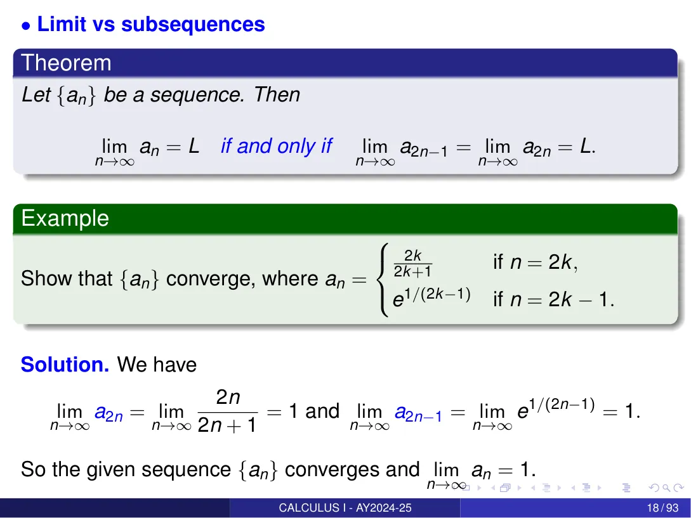
Theorem. $\lim a_n=L$ if and only if $\lim a_{2n-1}=\lim a_{2n}=L$: the sequence converges exactly when the odd and the even subsequences (which together contain every term) converge to the same number. Example: $a_n=\frac{2k}{2k+1}$ if $n=2k$ and $a_n=e^{1/(2k-1)}$ if $n=2k-1$. Then $\lim a_{2n}=\lim\frac{2n}{2n+1}=1$ and $\lim a_{2n-1}=\lim e^{1/(2n-1)}=1$, so $\{a_n\}$ converges and $\lim a_n=1$.
Định lý. $\lim a_n=L$ khi và chỉ khi $\lim a_{2n-1}=\lim a_{2n}=L$: dãy hội tụ đúng khi dãy con lẻ và dãy con chẵn (cùng nhau chứa mọi số hạng) hội tụ về cùng một số. Ví dụ: $a_n=\frac{2k}{2k+1}$ nếu $n=2k$ và $a_n=e^{1/(2k-1)}$ nếu $n=2k-1$. Khi đó $\lim a_{2n}=\lim\frac{2n}{2n+1}=1$ và $\lim a_{2n-1}=\lim e^{1/(2n-1)}=1$, nên $\{a_n\}$ hội tụ và $\lim a_n=1$.
Show that $a_n=\frac{3n+1}n$ for even $n$ and $a_n=3+\sin\frac1n$ for odd $n$ converges, and find the limit.
Chứng tỏ $a_n=\frac{3n+1}n$ với $n$ chẵn và $a_n=3+\sin\frac1n$ với $n$ lẻ hội tụ, và tìm giới hạn.
Answer and solution · Đáp án và lời giải
Answer · Đáp án: converges to $3$
Even terms: $\frac{3n+1}n=3+\frac1n\to3$. Odd terms: $3+\sin\frac1n\to3+\sin0=3$ ($\sin$ continuous). Both subsequences tend to $3$, so $a_n\to3$.
Số hạng chẵn: $\frac{3n+1}n=3+\frac1n\to3$. Số hạng lẻ: $3+\sin\frac1n\to3+\sin0=3$ ($\sin$ liên tục). Cả hai dãy con cùng tiến về $3$ nên $a_n\to3$.
The squeeze theorem for sequences · Định lý kẹp cho dãy số
★★★ Core · Cốt lõi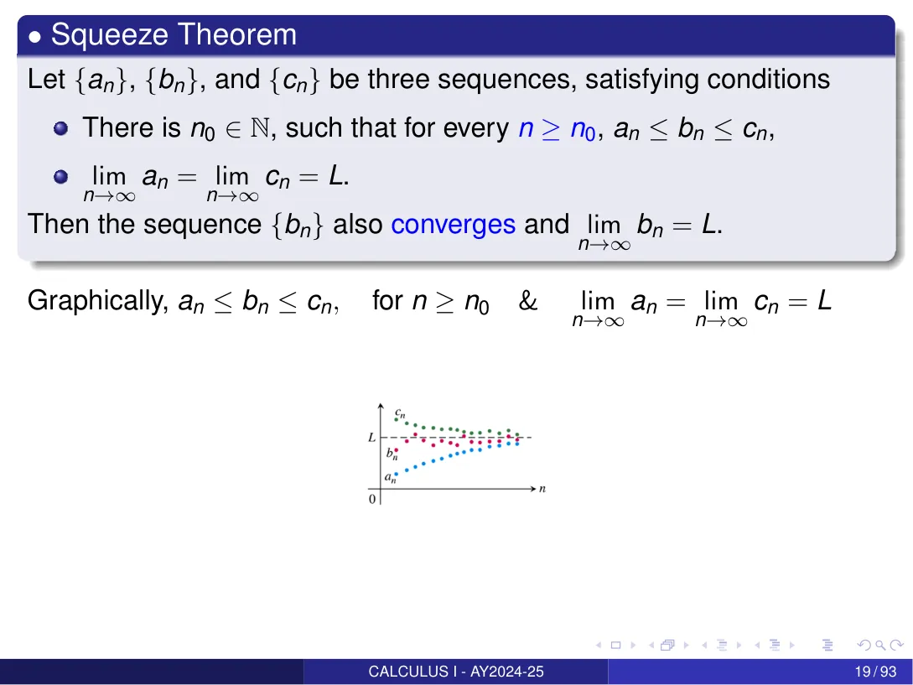
If $a_n\le b_n\le c_n$ for all $n\ge n_0$ and $\lim a_n=\lim c_n=L$, then $\{b_n\}$ also converges and $\lim b_n=L$. In the picture the sequence $b_n$ is trapped between two sequences that close in on the same value. The difficulty is always to find the two bounding sequences.
Nếu $a_n\le b_n\le c_n$ với mọi $n\ge n_0$ và $\lim a_n=\lim c_n=L$ thì $\{b_n\}$ cũng hội tụ và $\lim b_n=L$. Trên hình dãy $b_n$ bị kẹp giữa hai dãy cùng tiến về một giá trị. Khó khăn luôn là tìm hai dãy chặn.
Show that $\dfrac{n!}{n^n}\to0$.
Chứng tỏ $\dfrac{n!}{n^n}\to0$.
Answer and solution · Đáp án và lời giải
Answer · Đáp án: $0$
$\frac{n!}{n^n}=\frac1n\cdot\frac2n\cdots\frac nn$. Every factor is at most $1$, except that we keep the first one: $0<\frac{n!}{n^n}\le\frac1n\cdot1\cdots1=\frac1n\to0$. By the squeeze theorem the limit is $0$.
$\frac{n!}{n^n}=\frac1n\cdot\frac2n\cdots\frac nn$. Mọi thừa số đều $\le1$, chỉ giữ lại thừa số đầu: $0<\frac{n!}{n^n}\le\frac1n\cdot1\cdots1=\frac1n\to0$. Theo định lý kẹp giới hạn là $0$.
Example: $\frac{\cos n}n$ · Ví dụ: $\frac{\cos n}n$
★★★ Core · Cốt lõi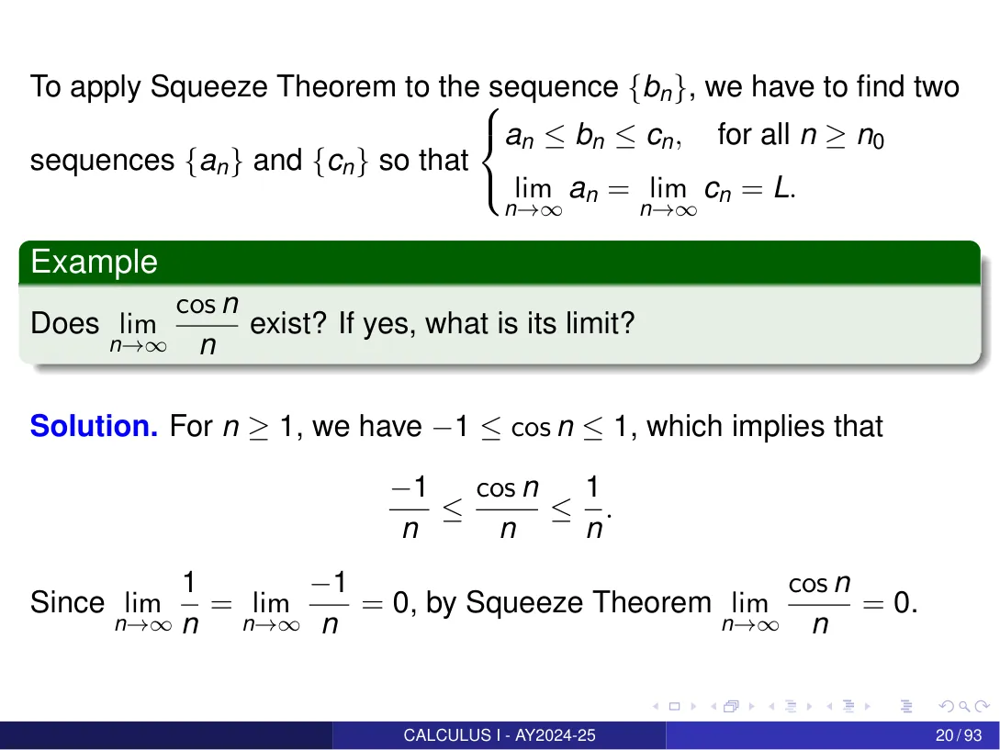
Does $\lim\frac{\cos n}n$ exist? For $n\ge1$, $-1\le\cos n\le1$, so $-\frac1n\le\frac{\cos n}n\le\frac1n$. Since $\lim\frac1n=\lim\frac{-1}n=0$, the squeeze theorem gives $\lim\frac{\cos n}n=0$. Typical pattern: a bounded numerator over a denominator that grows; do not try to find $\lim\cos n$, which does not exist.
$\lim\frac{\cos n}n$ có tồn tại không? Với $n\ge1$, $-1\le\cos n\le1$, nên $-\frac1n\le\frac{\cos n}n\le\frac1n$. Vì $\lim\frac1n=\lim\frac{-1}n=0$, định lý kẹp cho $\lim\frac{\cos n}n=0$. Mẫu điển hình: tử bị chặn trên mẫu tăng; đừng cố tìm $\lim\cos n$ vì nó không tồn tại.
Find $\displaystyle\lim_{n\to\infty}\frac{2+\sin n}{n^2}$.
Tìm $\displaystyle\lim_{n\to\infty}\frac{2+\sin n}{n^2}$.
Answer and solution · Đáp án và lời giải
Answer · Đáp án: $0$
$1\le2+\sin n\le3$, so $\frac1{n^2}\le\frac{2+\sin n}{n^2}\le\frac3{n^2}$, and both bounds tend to $0$.
$1\le2+\sin n\le3$, nên $\frac1{n^2}\le\frac{2+\sin n}{n^2}\le\frac3{n^2}$, và cả hai cận đều tiến về $0$.
Bounded sequences · Dãy bị chặn
★★★ Core · Cốt lõi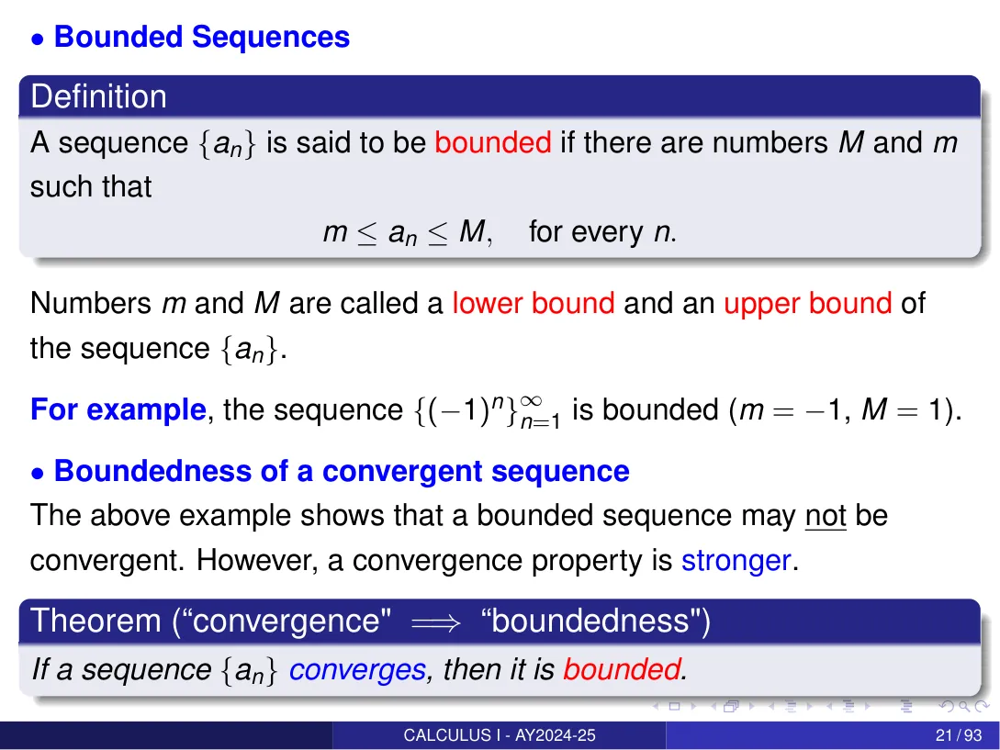
$\{a_n\}$ is bounded if $m\le a_n\le M$ for every $n$ ($m$ a lower bound, $M$ an upper bound). Example: $\{(-1)^n\}$ is bounded ($m=-1$, $M=1$) but not convergent, so boundedness alone is not enough. Theorem: a convergent sequence is bounded (convergence $\Rightarrow$ boundedness). Contrapositive: an unbounded sequence diverges.
$\{a_n\}$ bị chặn nếu $m\le a_n\le M$ với mọi $n$ ($m$ là cận dưới, $M$ là cận trên). Ví dụ: $\{(-1)^n\}$ bị chặn ($m=-1$, $M=1$) nhưng không hội tụ, nên chỉ bị chặn thì chưa đủ. Định lý: dãy hội tụ thì bị chặn (hội tụ $\Rightarrow$ bị chặn). Phản đảo: dãy không bị chặn thì phân kỳ.
Is $\left\{\frac n{n+1}\right\}$ bounded? Is $\{n^2\}$? What does each tell you about convergence?
$\left\{\frac n{n+1}\right\}$ có bị chặn không? $\{n^2\}$ thì sao? Mỗi kết quả cho biết gì về sự hội tụ?
Answer and solution · Đáp án và lời giải
Answer · Đáp án: the first is bounded (by $0$ and $1$), the second unbounded, hence divergent
$0<\frac n{n+1}<1$: bounded (and in fact convergent to $1$, as the theorem allows). $n^2\ge n$ has no upper bound, so $\{n^2\}$ cannot converge. Boundedness of the first does not prove convergence by itself; it only fails to forbid it.
$0<\frac n{n+1}<1$: bị chặn (và thực ra hội tụ về $1$, theo định lý cho phép). $n^2\ge n$ không có cận trên nên $\{n^2\}$ không thể hội tụ. Việc dãy đầu bị chặn tự nó chưa chứng minh được sự hội tụ; nó chỉ không cấm điều đó.
Monotone sequences · Dãy đơn điệu
★★★ Core · Cốt lõi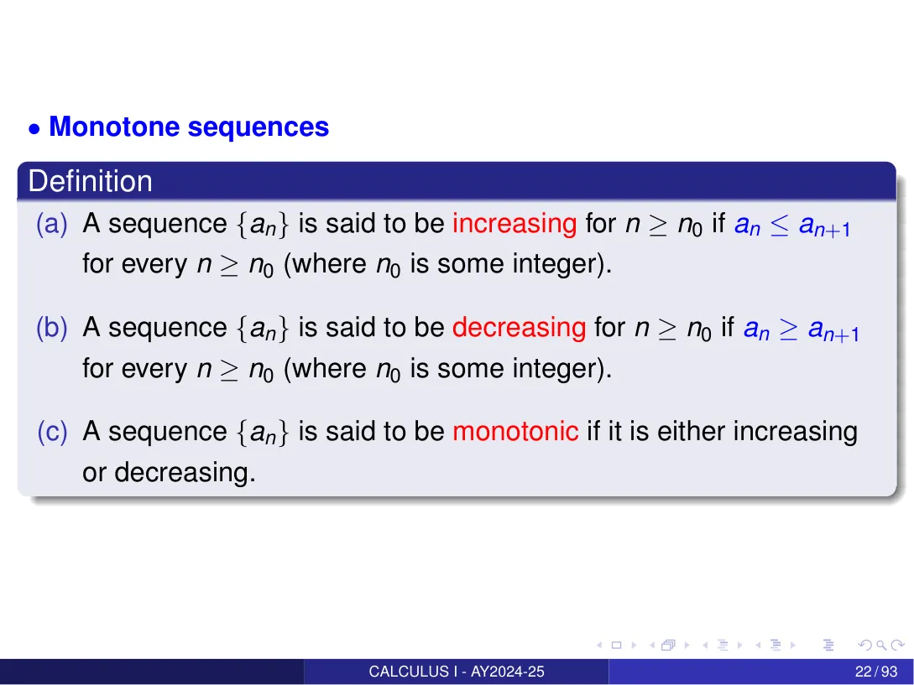
$\{a_n\}$ is increasing for $n\ge n_0$ if $a_n\le a_{n+1}$ for every $n\ge n_0$; decreasing if $a_n\ge a_{n+1}$; monotonic if it is either. To test it, compare $a_{n+1}-a_n$ with $0$, or (for positive terms) $\frac{a_{n+1}}{a_n}$ with $1$, or differentiate a fitting function.
$\{a_n\}$ là tăng với $n\ge n_0$ nếu $a_n\le a_{n+1}$ với mọi $n\ge n_0$; giảm nếu $a_n\ge a_{n+1}$; đơn điệu nếu thuộc một trong hai loại. Để kiểm tra, so sánh $a_{n+1}-a_n$ với $0$, hoặc (với số hạng dương) $\frac{a_{n+1}}{a_n}$ với $1$, hoặc lấy đạo hàm hàm khớp.
Show that $a_n=\frac n{n+1}$ is increasing and that $b_n=\frac{2^n}{n!}$ is decreasing for $n\ge1$.
Chứng tỏ $a_n=\frac n{n+1}$ tăng và $b_n=\frac{2^n}{n!}$ giảm với $n\ge1$.
Answer and solution · Đáp án và lời giải
Answer · Đáp án: $a_{n+1}-a_n=\frac1{(n+1)(n+2)}>0$ and $\frac{b_{n+1}}{b_n}=\frac2{n+1}\le1$
$a_{n+1}-a_n=\frac{n+1}{n+2}-\frac n{n+1}=\frac{(n+1)^2-n(n+2)}{(n+1)(n+2)}=\frac1{(n+1)(n+2)}>0$. $\frac{b_{n+1}}{b_n}=\frac{2^{n+1}}{(n+1)!}\cdot\frac{n!}{2^n}=\frac2{n+1}\le1$ for $n\ge1$, so $b_n$ is decreasing (the first two terms $b_1=b_2=2$ are equal).
$a_{n+1}-a_n=\frac{n+1}{n+2}-\frac n{n+1}=\frac{(n+1)^2-n(n+2)}{(n+1)(n+2)}=\frac1{(n+1)(n+2)}>0$. $\frac{b_{n+1}}{b_n}=\frac{2^{n+1}}{(n+1)!}\cdot\frac{n!}{2^n}=\frac2{n+1}\le1$ với $n\ge1$, nên $b_n$ giảm (hai số hạng đầu $b_1=b_2=2$ bằng nhau).
The Monotone Convergence Theorem · Định lý hội tụ đơn điệu
★★★ Core · Cốt lõi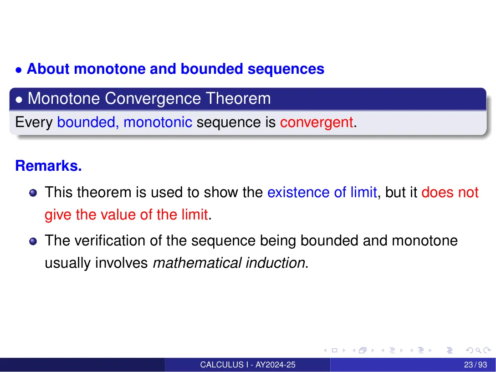
Every bounded, monotonic sequence is convergent. (An increasing sequence cannot pass its upper bound, so it settles down; likewise a decreasing one with a lower bound.) Remarks: the theorem shows that the limit exists but does not give its value; and checking "bounded and monotone" usually needs mathematical induction. After existence is known, the value is found from the recursion by letting $n\to\infty$.
Mọi dãy đơn điệu và bị chặn đều hội tụ. (Dãy tăng không thể vượt cận trên nên phải ổn định; tương tự dãy giảm có cận dưới.) Nhận xét: định lý chứng tỏ giới hạn tồn tại nhưng không cho giá trị của nó; và việc kiểm tra "bị chặn và đơn điệu" thường cần quy nạp toán học. Khi đã biết giới hạn tồn tại, giá trị được tìm từ công thức đệ quy bằng cách cho $n\to\infty$.
The recursive-sequence question (prove it converges by induction, then find the limit from $L=g(L)$) is a standard exam problem.
Bài dãy đệ quy (chứng minh hội tụ bằng quy nạp, rồi tìm giới hạn từ $L=g(L)$) là bài thi tiêu chuẩn.
Let $a_1=\sqrt2$, $a_{n+1}=\sqrt{2+a_n}$. Show that $\{a_n\}$ is increasing and bounded by $2$ (induction), then find its limit.
Cho $a_1=\sqrt2$, $a_{n+1}=\sqrt{2+a_n}$. Chứng tỏ $\{a_n\}$ tăng và bị chặn bởi $2$ (quy nạp), rồi tìm giới hạn.
Answer and solution · Đáp án và lời giải
Answer · Đáp án: $\lim a_n=2$
Bounded: $a_1=\sqrt2<2$; if $a_n<2$ then $a_{n+1}=\sqrt{2+a_n}<\sqrt4=2$. Increasing: $a_2=\sqrt{2+\sqrt2}>a_1$; if $a_n<a_{n+1}$ then $2+a_n<2+a_{n+1}$ so $a_{n+1}<a_{n+2}$. By the Monotone Convergence Theorem $a_n\to L$. Then $L=\sqrt{2+L}$, so $L^2-L-2=0$, $L=2$ or $-1$; the terms are positive so $L=2$. (In closed form $a_n=2\cos\frac\pi{2^{n+1}}$.)
Bị chặn: $a_1=\sqrt2<2$; nếu $a_n<2$ thì $a_{n+1}=\sqrt{2+a_n}<\sqrt4=2$. Tăng: $a_2=\sqrt{2+\sqrt2}>a_1$; nếu $a_n<a_{n+1}$ thì $2+a_n<2+a_{n+1}$ nên $a_{n+1}<a_{n+2}$. Theo Định lý hội tụ đơn điệu $a_n\to L$. Khi đó $L=\sqrt{2+L}$, nên $L^2-L-2=0$, $L=2$ hoặc $-1$; các số hạng dương nên $L=2$. (Dạng đóng $a_n=2\cos\frac\pi{2^{n+1}}$.)
Fitting functions and L'Hôpital · Hàm khớp và quy tắc L'Hôpital
★★★ Core · Cốt lõi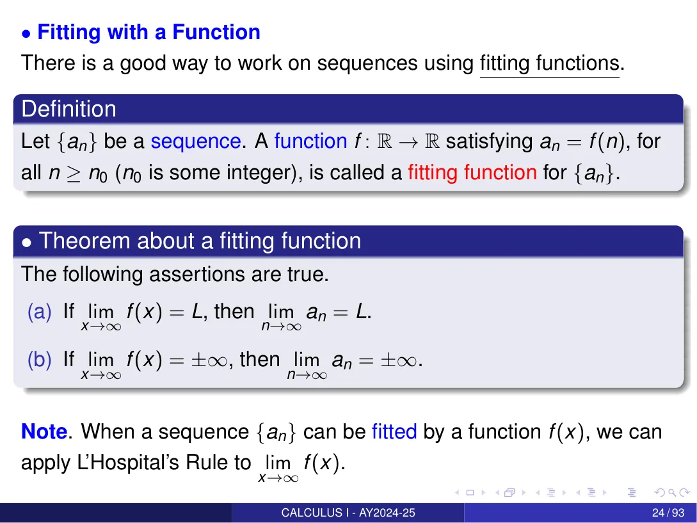
A function $f:\mathbb R\to\mathbb R$ with $a_n=f(n)$ for $n\ge n_0$ is a fitting function for $\{a_n\}$. Theorem: (a) if $\lim_{x\to\infty}f(x)=L$ then $\lim a_n=L$; (b) if $\lim_{x\to\infty}f(x)=\pm\infty$ then $\lim a_n=\pm\infty$. Since $f$ is a function of a real variable, L'Hôpital's rule applies to it, which it does not to the sequence directly. The converse fails: $a_n=\sin(n\pi)=0$ converges but $f(x)=\sin(\pi x)$ has no limit at infinity.
Hàm $f:\mathbb R\to\mathbb R$ với $a_n=f(n)$ với $n\ge n_0$ là hàm khớp của $\{a_n\}$. Định lý: (a) nếu $\lim_{x\to\infty}f(x)=L$ thì $\lim a_n=L$; (b) nếu $\lim_{x\to\infty}f(x)=\pm\infty$ thì $\lim a_n=\pm\infty$. Vì $f$ là hàm của biến thực, quy tắc L'Hôpital áp dụng được cho nó, điều không làm trực tiếp được với dãy. Mệnh đề đảo sai: $a_n=\sin(n\pi)=0$ hội tụ nhưng $f(x)=\sin(\pi x)$ không có giới hạn tại vô cực.
Find $\lim\frac n{e^n}$, $\lim\frac{\ln n}n$ and $\lim\left(1+\frac1n\right)^n$ using fitting functions.
Tìm $\lim\frac n{e^n}$, $\lim\frac{\ln n}n$ và $\lim\left(1+\frac1n\right)^n$ bằng hàm khớp.
Answer and solution · Đáp án và lời giải
Answer · Đáp án: $0$, $0$ and $e$
$\lim_{x\to\infty}\frac x{e^x}=\lim\frac1{e^x}=0$ and $\lim\frac{\ln x}x=\lim\frac{1/x}1=0$ (L'Hôpital, form $\frac\infty\infty$). For $\left(1+\frac1x\right)^x$ take logarithms: $x\ln\left(1+\frac1x\right)=\frac{\ln(1+1/x)}{1/x}\to1$ by L'Hôpital (form $\frac00$), so the limit is $e^1=e$.
$\lim_{x\to\infty}\frac x{e^x}=\lim\frac1{e^x}=0$ và $\lim\frac{\ln x}x=\lim\frac{1/x}1=0$ (L'Hôpital, dạng $\frac\infty\infty$). Với $\left(1+\frac1x\right)^x$ lấy logarit: $x\ln\left(1+\frac1x\right)=\frac{\ln(1+1/x)}{1/x}\to1$ theo L'Hôpital (dạng $\frac00$), nên giới hạn là $e^1=e$.
Outline: infinite series · Dàn bài: chuỗi vô hạn
★ Context · Bổ trợ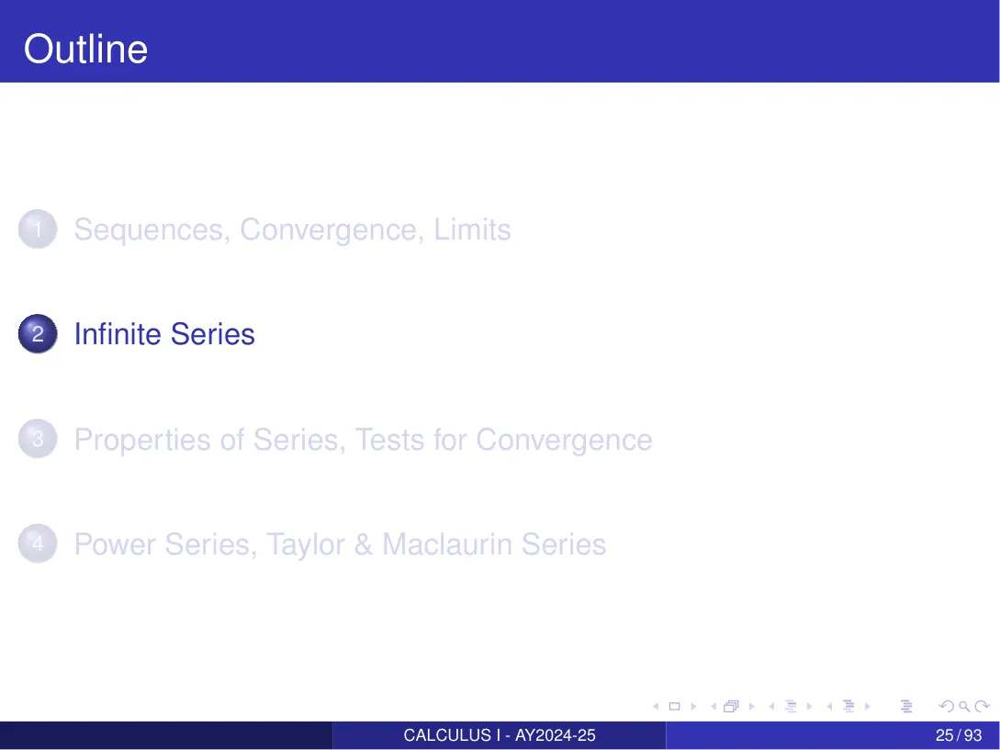
Part 2 of the chapter: infinite series.
Phần 2 của chương: chuỗi vô hạn.
Definition of an infinite series · Định nghĩa chuỗi vô hạn
★★★ Core · Cốt lõi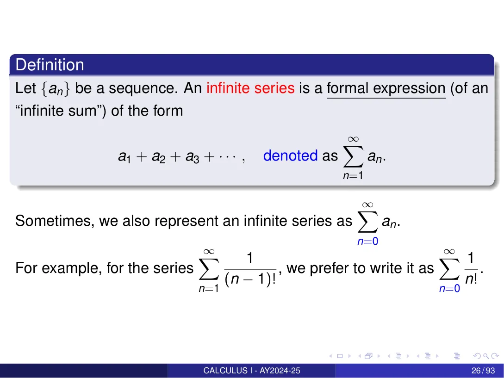
An infinite series is the formal expression $a_1+a_2+a_3+\cdots$, written $\sum_{n=1}^\infty a_n$, built from a sequence $\{a_n\}$. It may start at $n=0$, $\sum_{n=0}^\infty a_n$; we prefer the form with the simplest index, e.g. $\sum_{n=1}^\infty\frac1{(n-1)!}$ is better written $\sum_{n=0}^\infty\frac1{n!}$. It is only a formal sum: whether it has a value is the question of convergence.
Chuỗi vô hạn là biểu thức hình thức $a_1+a_2+a_3+\cdots$, viết $\sum_{n=1}^\infty a_n$, xây từ dãy $\{a_n\}$. Nó có thể bắt đầu từ $n=0$, $\sum_{n=0}^\infty a_n$; ta thích dạng có chỉ số đơn giản nhất, ví dụ $\sum_{n=1}^\infty\frac1{(n-1)!}$ nên viết $\sum_{n=0}^\infty\frac1{n!}$. Đó chỉ là tổng hình thức: nó có giá trị hay không là câu hỏi về sự hội tụ.
Rewrite $\displaystyle\sum_{n=1}^\infty\frac{n+1}{2^{n-1}}$ as a series starting at $n=0$.
Viết lại $\displaystyle\sum_{n=1}^\infty\frac{n+1}{2^{n-1}}$ thành chuỗi bắt đầu từ $n=0$.
Answer and solution · Đáp án và lời giải
Answer · Đáp án: $\displaystyle\sum_{m=0}^\infty\frac{m+2}{2^m}$
Put $m=n-1$, so $n=m+1$ and $n+1=m+2$; when $n=1$, $m=0$. The terms are identical, only relabelled: $2+\frac32+\frac44+\cdots$.
Đặt $m=n-1$, nên $n=m+1$ và $n+1=m+2$; khi $n=1$ thì $m=0$. Các số hạng giống hệt nhau, chỉ đánh nhãn lại: $2+\frac32+\frac44+\cdots$.
Partial sums and convergence of a series · Tổng riêng và sự hội tụ của chuỗi
★★★ Core · Cốt lõi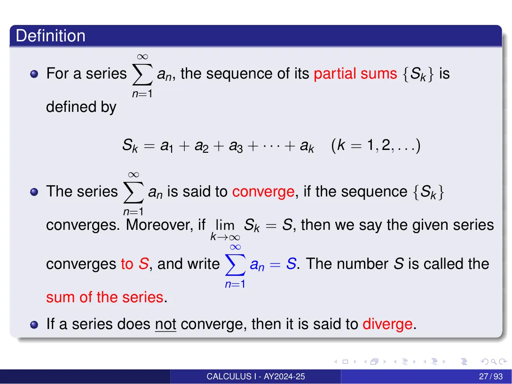
The $k$-th partial sum of $\sum_{n=1}^\infty a_n$ is $S_k=a_1+a_2+\cdots+a_k$. The series converges if the sequence $\{S_k\}$ converges; if $\lim S_k=S$ we write $\sum a_n=S$ and call $S$ the sum of the series. If $\{S_k\}$ does not converge, the series diverges. This is the bridge from series back to sequences: every question about a series is a question about $\{S_k\}$.
Tổng riêng thứ $k$ của $\sum_{n=1}^\infty a_n$ là $S_k=a_1+a_2+\cdots+a_k$. Chuỗi hội tụ nếu dãy $\{S_k\}$ hội tụ; nếu $\lim S_k=S$ ta viết $\sum a_n=S$ và gọi $S$ là tổng của chuỗi. Nếu $\{S_k\}$ không hội tụ thì chuỗi phân kỳ. Đây là cây cầu từ chuỗi quay về dãy: mọi câu hỏi về chuỗi là câu hỏi về $\{S_k\}$.
For $\sum_{n=1}^\infty\frac1{2^n}$ compute $S_1,S_2,S_3,S_4$, guess $S_k$ and find the sum.
Với $\sum_{n=1}^\infty\frac1{2^n}$ tính $S_1,S_2,S_3,S_4$, đoán $S_k$ và tìm tổng.
Answer and solution · Đáp án và lời giải
Answer · Đáp án: $\frac12,\frac34,\frac78,\frac{15}{16}$; $S_k=1-\frac1{2^k}\to1$
$S_1=\frac12$, $S_2=\frac34$, $S_3=\frac78$, $S_4=\frac{15}{16}$, so $S_k=1-\frac1{2^k}$ (the gap to $1$ halves at each step). $\lim S_k=1$: the series converges to $1$.
$S_1=\frac12$, $S_2=\frac34$, $S_3=\frac78$, $S_4=\frac{15}{16}$, nên $S_k=1-\frac1{2^k}$ (khoảng cách tới $1$ giảm một nửa mỗi bước). $\lim S_k=1$: chuỗi hội tụ về $1$.
Example: the telescoping series $\sum\frac1{n(n+1)}$ · Ví dụ: chuỗi thu gọn $\sum\frac1{n(n+1)}$
★★★ Core · Cốt lõi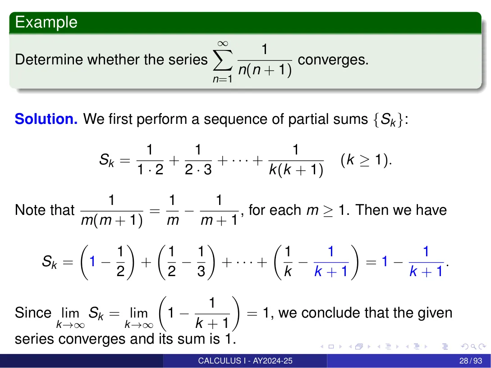
Use $\frac1{m(m+1)}=\frac1m-\frac1{m+1}$ (partial fractions). Then $S_k=\left(1-\frac12\right)+\left(\frac12-\frac13\right)+\cdots+\left(\frac1k-\frac1{k+1}\right)=1-\frac1{k+1}$: every middle term cancels (telescoping). Since $\lim S_k=1$, the series converges and its sum is $1$.
Dùng $\frac1{m(m+1)}=\frac1m-\frac1{m+1}$ (phân thức đơn giản). Khi đó $S_k=\left(1-\frac12\right)+\left(\frac12-\frac13\right)+\cdots+\left(\frac1k-\frac1{k+1}\right)=1-\frac1{k+1}$: mọi số hạng ở giữa triệt tiêu (thu gọn). Vì $\lim S_k=1$ nên chuỗi hội tụ và tổng bằng $1$.
Find $\displaystyle\sum_{n=1}^\infty\frac1{n(n+2)}$.
Tìm $\displaystyle\sum_{n=1}^\infty\frac1{n(n+2)}$.
Answer and solution · Đáp án và lời giải
Answer · Đáp án: $\dfrac34$
$\frac1{n(n+2)}=\frac12\left(\frac1n-\frac1{n+2}\right)$. In $S_k$ everything cancels except the first two and last two terms: $S_k=\frac12\left(1+\frac12-\frac1{k+1}-\frac1{k+2}\right)\to\frac12\cdot\frac32=\frac34$.
$\frac1{n(n+2)}=\frac12\left(\frac1n-\frac1{n+2}\right)$. Trong $S_k$ mọi thứ triệt tiêu trừ hai số hạng đầu và hai số hạng cuối: $S_k=\frac12\left(1+\frac12-\frac1{k+1}-\frac1{k+2}\right)\to\frac12\cdot\frac32=\frac34$.
Geometric series · Chuỗi hình học
★★★ Core · Cốt lõi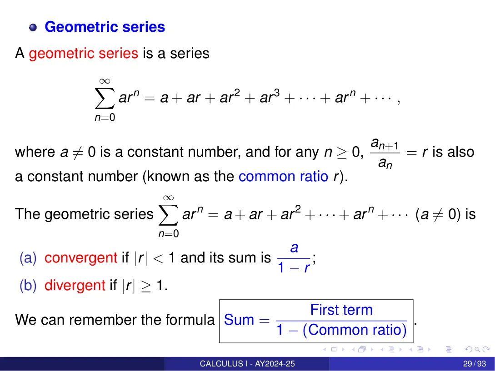
A geometric series $\sum_{n=0}^\infty ar^n=a+ar+ar^2+\cdots$ ($a\ne0$) has a constant ratio $r=\frac{a_{n+1}}{a_n}$ between consecutive terms. It converges if $|r|<1$, with sum $\frac a{1-r}$, and diverges if $|r|\ge1$. Remember it as $\text{Sum}=\dfrac{\text{first term}}{1-\text{common ratio}}$; if the series starts at $n=1$ the first term is $ar$, not $a$.
Chuỗi hình học $\sum_{n=0}^\infty ar^n=a+ar+ar^2+\cdots$ ($a\ne0$) có tỉ số không đổi $r=\frac{a_{n+1}}{a_n}$ giữa hai số hạng liên tiếp. Nó hội tụ nếu $|r|<1$, với tổng $\frac a{1-r}$, và phân kỳ nếu $|r|\ge1$. Nhớ là $\text{Tổng}=\dfrac{\text{số hạng đầu}}{1-\text{công bội}}$; nếu chuỗi bắt đầu từ $n=1$ thì số hạng đầu là $ar$, không phải $a$.
Geometric series are the only series (with the telescoping ones) whose sum we can write down exactly, and they are the comparison yardstick for the ratio and root tests.
Chuỗi hình học là loại chuỗi duy nhất (cùng với chuỗi thu gọn) mà ta viết được tổng chính xác, và là thước so sánh cho tiêu chuẩn tỉ số và căn.
Sum $\displaystyle\sum_{n=0}^\infty3\left(\frac25\right)^n$ and $\displaystyle\sum_{n=1}^\infty\left(-\frac13\right)^n$, and write $0.272727\ldots$ as a fraction.
Tính tổng $\displaystyle\sum_{n=0}^\infty3\left(\frac25\right)^n$ và $\displaystyle\sum_{n=1}^\infty\left(-\frac13\right)^n$, và viết $0.272727\ldots$ dưới dạng phân số.
Answer and solution · Đáp án và lời giải
Answer · Đáp án: $5$, $-\dfrac14$ and $\dfrac3{11}$
First: $\frac3{1-2/5}=5$. Second starts at $n=1$: first term $-\frac13$, ratio $-\frac13$: $\frac{-1/3}{1+1/3}=-\frac14$. Third: $0.27+0.0027+\cdots$ has first term $\frac{27}{100}$ and ratio $\frac1{100}$: $\frac{27/100}{1-1/100}=\frac{27}{99}=\frac3{11}$.
Bài 1: $\frac3{1-2/5}=5$. Bài 2 bắt đầu từ $n=1$: số hạng đầu $-\frac13$, công bội $-\frac13$: $\frac{-1/3}{1+1/3}=-\frac14$. Bài 3: $0.27+0.0027+\cdots$ có số hạng đầu $\frac{27}{100}$ và công bội $\frac1{100}$: $\frac{27/100}{1-1/100}=\frac{27}{99}=\frac3{11}$.
The harmonic series diverges · Chuỗi điều hòa phân kỳ
★★★ Core · Cốt lõi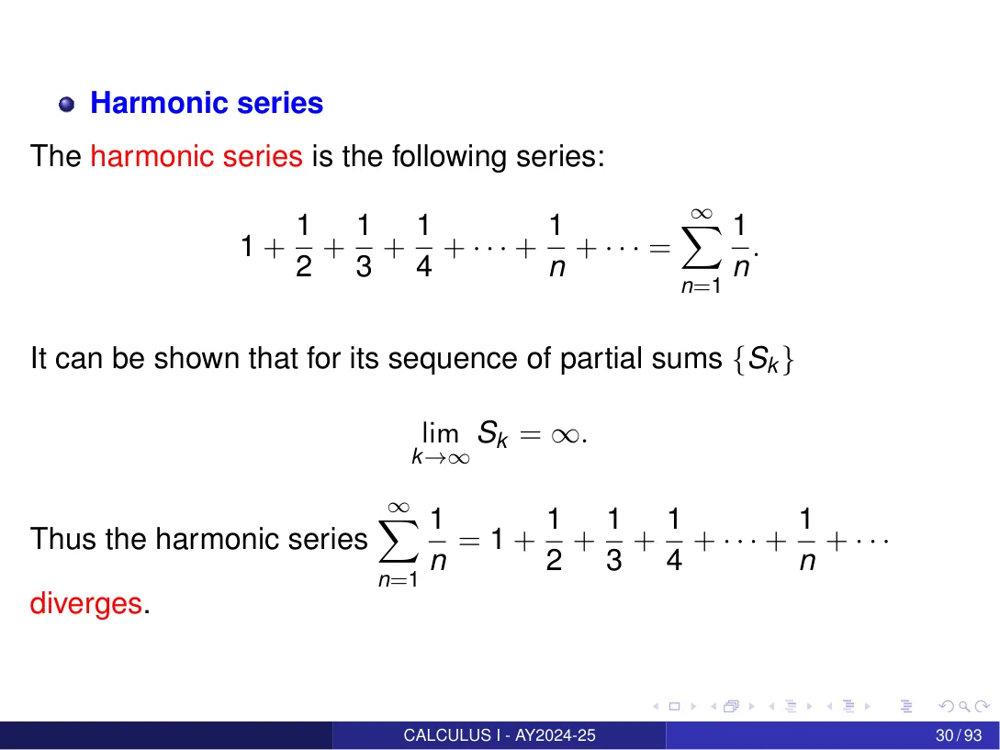
The harmonic series $\sum_{n=1}^\infty\frac1n=1+\frac12+\frac13+\frac14+\cdots$ has partial sums with $\lim S_k=\infty$, so it diverges, even though its terms tend to $0$. It diverges very slowly (about $\ln k$): the first million terms add up to only about $14.4$. The standard proof groups the terms: $\frac13+\frac14\ge\frac12$, $\frac15+\cdots+\frac18\ge\frac12$, and so on.
Chuỗi điều hòa $\sum_{n=1}^\infty\frac1n=1+\frac12+\frac13+\frac14+\cdots$ có các tổng riêng với $\lim S_k=\infty$ nên phân kỳ, dù các số hạng tiến về $0$. Nó phân kỳ rất chậm (cỡ $\ln k$): một triệu số hạng đầu chỉ cộng được khoảng $14.4$. Cách chứng minh chuẩn là nhóm các số hạng: $\frac13+\frac14\ge\frac12$, $\frac15+\cdots+\frac18\ge\frac12$, và cứ thế.
Show by grouping that $S_{2^k}\ge1+\frac k2$ for the harmonic series, so $S_k\to\infty$.
Chứng tỏ bằng cách nhóm rằng $S_{2^k}\ge1+\frac k2$ với chuỗi điều hòa, nên $S_k\to\infty$.
Answer and solution · Đáp án và lời giải
Answer · Đáp án: $S_{2^k}\ge1+\dfrac k2$
$S_{2^k}=1+\frac12+\left(\frac13+\frac14\right)+\left(\frac15+\cdots+\frac18\right)+\cdots+\left(\frac1{2^{k-1}+1}+\cdots+\frac1{2^k}\right)$. The group with $2^{j-1}$ terms has each term $\ge\frac1{2^j}$, so it is $\ge\frac12$; there are $k$ groups (counting $\frac12$ as the first), hence $S_{2^k}\ge1+\frac k2\to\infty$.
$S_{2^k}=1+\frac12+\left(\frac13+\frac14\right)+\left(\frac15+\cdots+\frac18\right)+\cdots+\left(\frac1{2^{k-1}+1}+\cdots+\frac1{2^k}\right)$. Nhóm có $2^{j-1}$ số hạng mà mỗi số hạng $\ge\frac1{2^j}$ nên nhóm $\ge\frac12$; có $k$ nhóm (tính $\frac12$ là nhóm đầu), do đó $S_{2^k}\ge1+\frac k2\to\infty$.
Outline: properties and tests · Dàn bài: tính chất và tiêu chuẩn
★ Context · Bổ trợ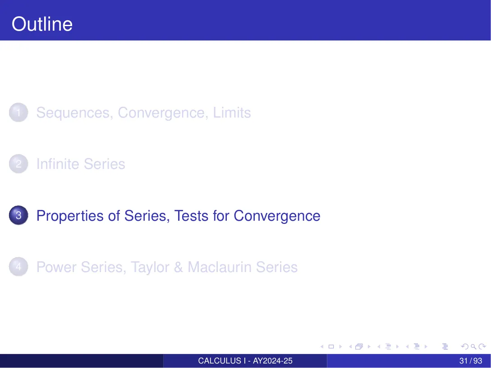
Part 3 of the chapter: properties of series and tests for convergence.
Phần 3 của chương: tính chất của chuỗi và các tiêu chuẩn hội tụ.
Necessary condition and operations on series · Điều kiện cần và các phép toán trên chuỗi
★★★ Core · Cốt lõi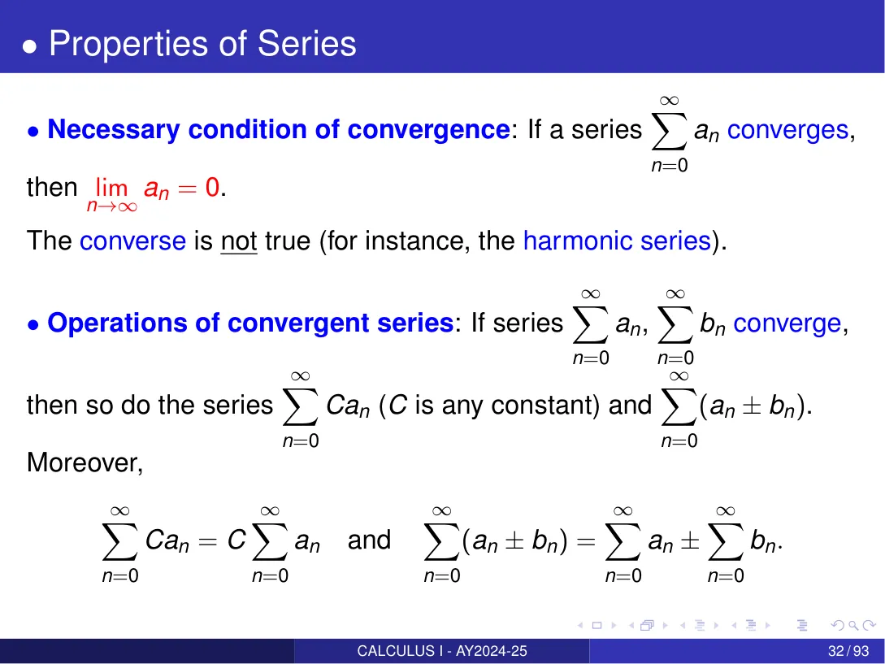
Necessary condition: if $\sum a_n$ converges then $\lim a_n=0$. The converse is false: the harmonic series has $\frac1n\to0$ yet diverges. Operations: if $\sum a_n$ and $\sum b_n$ converge, so do $\sum Ca_n$ and $\sum(a_n\pm b_n)$, and $\sum Ca_n=C\sum a_n$, $\sum(a_n\pm b_n)=\sum a_n\pm\sum b_n$. Consequently if one of two series converges and the other diverges, the sum of the two diverges.
Điều kiện cần: nếu $\sum a_n$ hội tụ thì $\lim a_n=0$. Mệnh đề đảo sai: chuỗi điều hòa có $\frac1n\to0$ nhưng phân kỳ. Các phép toán: nếu $\sum a_n$ và $\sum b_n$ hội tụ thì $\sum Ca_n$ và $\sum(a_n\pm b_n)$ cũng hội tụ, và $\sum Ca_n=C\sum a_n$, $\sum(a_n\pm b_n)=\sum a_n\pm\sum b_n$. Do đó nếu một trong hai chuỗi hội tụ còn chuỗi kia phân kỳ thì tổng của chúng phân kỳ.
Find $\displaystyle\sum_{n=0}^\infty\left[\left(\frac12\right)^n+\left(\frac13\right)^n\right]$.
Tìm $\displaystyle\sum_{n=0}^\infty\left[\left(\frac12\right)^n+\left(\frac13\right)^n\right]$.
Answer and solution · Đáp án và lời giải
Answer · Đáp án: $\dfrac72$
Both series are geometric and convergent, so we may add termwise: $\frac1{1-1/2}+\frac1{1-1/3}=2+\frac32=\frac72$.
Cả hai chuỗi đều hình học và hội tụ nên có thể cộng từng số hạng: $\frac1{1-1/2}+\frac1{1-1/3}=2+\frac32=\frac72$.
The test for divergence · Tiêu chuẩn phân kỳ
★★★ Core · Cốt lõi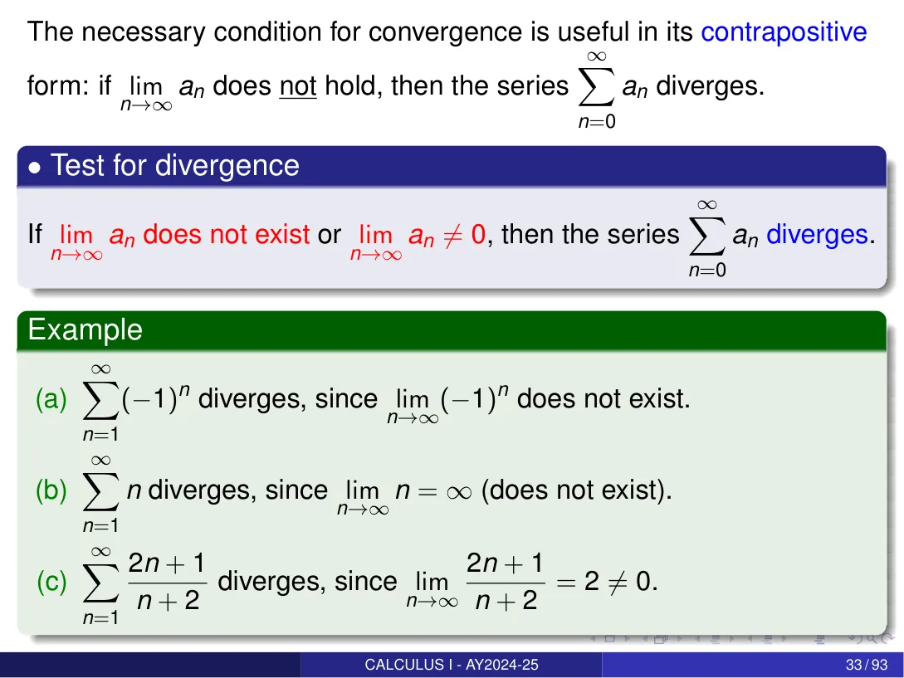
The necessary condition in contrapositive form: if $\lim a_n$ does not exist or is not $0$, then $\sum a_n$ diverges. Examples: $\sum(-1)^n$ diverges because $\lim(-1)^n$ does not exist; $\sum n$ because $\lim n=\infty$; $\sum\frac{2n+1}{n+2}$ because the terms tend to $2\ne0$. The test can only prove divergence: if $a_n\to0$ it tells you nothing, and you must use another test.
Điều kiện cần ở dạng phản đảo: nếu $\lim a_n$ không tồn tại hoặc khác $0$ thì $\sum a_n$ phân kỳ. Ví dụ: $\sum(-1)^n$ phân kỳ vì $\lim(-1)^n$ không tồn tại; $\sum n$ vì $\lim n=\infty$; $\sum\frac{2n+1}{n+2}$ vì các số hạng tiến về $2\ne0$. Tiêu chuẩn chỉ chứng minh được phân kỳ: nếu $a_n\to0$ nó không cho biết gì, và phải dùng tiêu chuẩn khác.
Always run this test first: it is the quickest and it filters out many divergent series. The classic error is to use $a_n\to0$ as proof of convergence.
Luôn chạy tiêu chuẩn này đầu tiên: nhanh nhất và loại được nhiều chuỗi phân kỳ. Lỗi kinh điển là dùng $a_n\to0$ làm bằng chứng hội tụ.
For $\sum\frac n{2n+1}$, $\sum\frac1n$, $\sum\left(1+\frac1n\right)^n$, $\sum\frac1{n^2}$ say where the test for divergence proves divergence and where it is inconclusive.
Với $\sum\frac n{2n+1}$, $\sum\frac1n$, $\sum\left(1+\frac1n\right)^n$, $\sum\frac1{n^2}$ cho biết tiêu chuẩn phân kỳ chứng minh được phân kỳ ở đâu và không kết luận được ở đâu.
Answer and solution · Đáp án và lời giải
Answer · Đáp án: diverges for 1st and 3rd; inconclusive for 2nd (diverges) and 4th (converges)
$\frac n{2n+1}\to\frac12\ne0$: diverges. $\left(1+\frac1n\right)^n\to e\ne0$: diverges. $\frac1n\to0$ and $\frac1{n^2}\to0$: inconclusive; the harmonic series diverges while $\sum\frac1{n^2}$ converges ($p=2$).
$\frac n{2n+1}\to\frac12\ne0$: phân kỳ. $\left(1+\frac1n\right)^n\to e\ne0$: phân kỳ. $\frac1n\to0$ và $\frac1{n^2}\to0$: không kết luận được; chuỗi điều hòa phân kỳ còn $\sum\frac1{n^2}$ hội tụ ($p=2$).
Alternating series · Chuỗi đan dấu
★★ Important · Quan trọng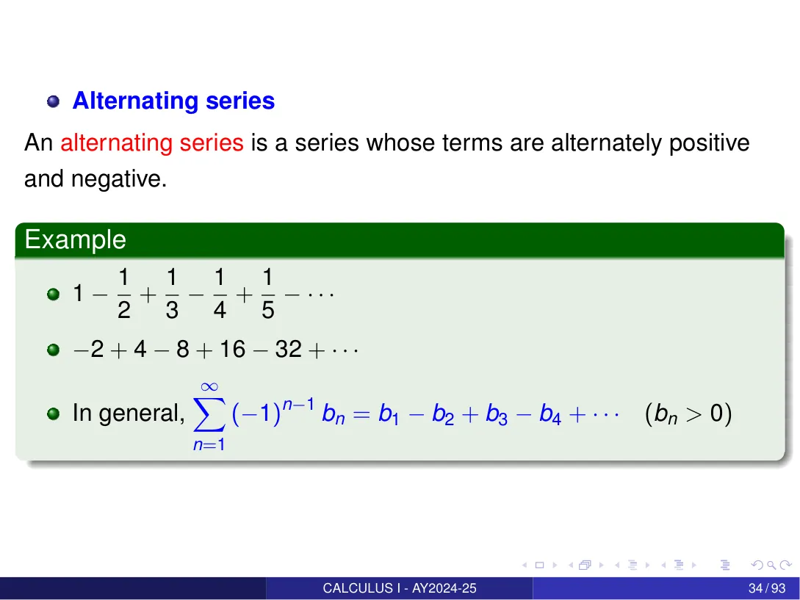
An alternating series has terms that are alternately positive and negative: $1-\frac12+\frac13-\frac14+\cdots$ or $-2+4-8+16-\cdots$. In general $\sum_{n=1}^\infty(-1)^{n-1}b_n=b_1-b_2+b_3-\cdots$ with $b_n>0$. The second example diverges by the test for divergence ($b_n=2^n\not\to0$).
Chuỗi đan dấu có các số hạng dương và âm xen kẽ: $1-\frac12+\frac13-\frac14+\cdots$ hoặc $-2+4-8+16-\cdots$. Tổng quát $\sum_{n=1}^\infty(-1)^{n-1}b_n=b_1-b_2+b_3-\cdots$ với $b_n>0$. Ví dụ thứ hai phân kỳ theo tiêu chuẩn phân kỳ ($b_n=2^n\not\to0$).
The alternating series test · Tiêu chuẩn chuỗi đan dấu
★★★ Core · Cốt lõi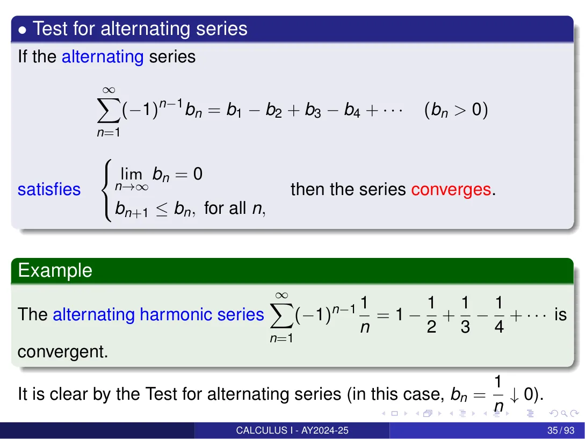
If $\sum(-1)^{n-1}b_n$ ($b_n>0$) satisfies (i) $\lim b_n=0$ and (ii) $b_{n+1}\le b_n$ for all $n$ (the $b_n$ decrease), then the series converges. Example: the alternating harmonic series $1-\frac12+\frac13-\cdots$ converges since $b_n=\frac1n\downarrow0$. Both conditions are needed; this test proves convergence only and never divergence, and it does not say the convergence is absolute.
Nếu $\sum(-1)^{n-1}b_n$ ($b_n>0$) thỏa (i) $\lim b_n=0$ và (ii) $b_{n+1}\le b_n$ với mọi $n$ (các $b_n$ giảm) thì chuỗi hội tụ. Ví dụ: chuỗi điều hòa đan dấu $1-\frac12+\frac13-\cdots$ hội tụ vì $b_n=\frac1n\downarrow0$. Cần cả hai điều kiện; tiêu chuẩn này chỉ chứng minh hội tụ chứ không bao giờ chứng minh phân kỳ, và nó không nói rằng sự hội tụ là tuyệt đối.
Does $\displaystyle\sum_{n=1}^\infty(-1)^{n-1}\frac n{n^2+1}$ converge?
$\displaystyle\sum_{n=1}^\infty(-1)^{n-1}\frac n{n^2+1}$ có hội tụ không?
Answer and solution · Đáp án và lời giải
Answer · Đáp án: converges (alternating series test)
$b_n=\frac n{n^2+1}\to0$. Decreasing: $b_n-b_{n+1}=\dfrac{n\left((n+1)^2+1\right)-(n+1)(n^2+1)}{(n^2+1)\left((n+1)^2+1\right)}$ and the numerator equals $n^2+n-1>0$ for $n\ge1$, so $b_{n+1}<b_n$. Both conditions hold, hence the series converges.
$b_n=\frac n{n^2+1}\to0$. Giảm: $b_n-b_{n+1}=\dfrac{n\left((n+1)^2+1\right)-(n+1)(n^2+1)}{(n^2+1)\left((n+1)^2+1\right)}$ và tử số bằng $n^2+n-1>0$ với $n\ge1$, nên $b_{n+1}<b_n$. Cả hai điều kiện đều thỏa nên chuỗi hội tụ.
Series with non-negative terms · Chuỗi có số hạng không âm
★★★ Core · Cốt lõi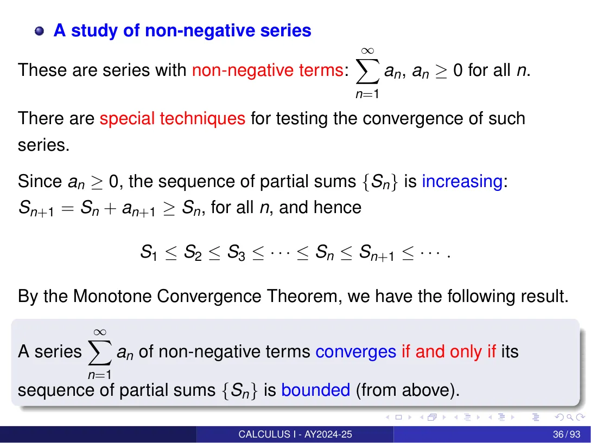
For $\sum a_n$ with $a_n\ge0$ the partial sums are increasing: $S_{n+1}=S_n+a_{n+1}\ge S_n$. By the Monotone Convergence Theorem, a series of non-negative terms converges if and only if its partial sums are bounded above. This is why non-negative series have their own special tests: they either converge to a finite sum or climb to $\infty$.
Với $\sum a_n$ có $a_n\ge0$ các tổng riêng tăng: $S_{n+1}=S_n+a_{n+1}\ge S_n$. Theo Định lý hội tụ đơn điệu, chuỗi các số hạng không âm hội tụ khi và chỉ khi các tổng riêng bị chặn trên. Vì vậy chuỗi không âm có các tiêu chuẩn riêng: chúng hoặc hội tụ về tổng hữu hạn hoặc tăng đến $\infty$.
Show that $\sum\frac1{n^2}$ converges by bounding its partial sums, using $\frac1{n^2}\le\frac1{n-1}-\frac1n$ for $n\ge2$.
Chứng tỏ $\sum\frac1{n^2}$ hội tụ bằng cách chặn các tổng riêng, dùng $\frac1{n^2}\le\frac1{n-1}-\frac1n$ với $n\ge2$.
Answer and solution · Đáp án và lời giải
Answer · Đáp án: $S_k\le2-\dfrac1k<2$; the sum is $\dfrac{\pi^2}6$
$\frac1{n-1}-\frac1n=\frac1{n(n-1)}\ge\frac1{n^2}$. So $S_k\le1+\left(1-\frac12\right)+\left(\frac12-\frac13\right)+\cdots+\left(\frac1{k-1}-\frac1k\right)=2-\frac1k<2$. The partial sums are increasing and bounded, so the series converges (its sum is in fact $\frac{\pi^2}6\approx1.645$).
$\frac1{n-1}-\frac1n=\frac1{n(n-1)}\ge\frac1{n^2}$. Vậy $S_k\le1+\left(1-\frac12\right)+\left(\frac12-\frac13\right)+\cdots+\left(\frac1{k-1}-\frac1k\right)=2-\frac1k<2$. Các tổng riêng tăng và bị chặn nên chuỗi hội tụ (tổng thực ra là $\frac{\pi^2}6\approx1.645$).
Tests for non-negative series: integral and comparison · Các tiêu chuẩn cho chuỗi không âm: tích phân và so sánh
★★★ Core · Cốt lõi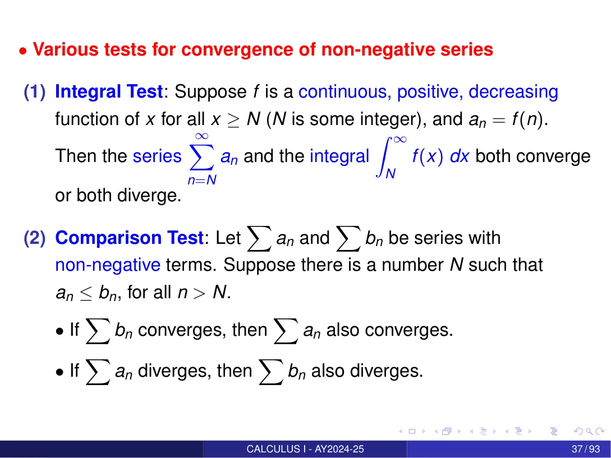
(1) Integral test: if $f$ is continuous, positive and decreasing for $x\ge N$ and $a_n=f(n)$, then $\sum_{n=N}^\infty a_n$ and $\int_N^\infty f(x)\,dx$ both converge or both diverge. (2) Comparison test: for non-negative series with $a_n\le b_n$ for $n>N$: if $\sum b_n$ converges then $\sum a_n$ converges; if $\sum a_n$ diverges then $\sum b_n$ diverges. The integral test links this lecture to the improper integrals of Chapter 5.
(1) Tiêu chuẩn tích phân: nếu $f$ liên tục, dương và giảm với $x\ge N$ và $a_n=f(n)$ thì $\sum_{n=N}^\infty a_n$ và $\int_N^\infty f(x)\,dx$ cùng hội tụ hoặc cùng phân kỳ. (2) Tiêu chuẩn so sánh: với chuỗi không âm có $a_n\le b_n$ khi $n>N$: nếu $\sum b_n$ hội tụ thì $\sum a_n$ hội tụ; nếu $\sum a_n$ phân kỳ thì $\sum b_n$ phân kỳ. Tiêu chuẩn tích phân nối bài này với tích phân suy rộng của Chương 5.
Decide with the integral test: $\displaystyle\sum_{n=2}^\infty\frac1{n\ln n}$ and $\displaystyle\sum_{n=1}^\infty ne^{-n^2}$.
Xét bằng tiêu chuẩn tích phân: $\displaystyle\sum_{n=2}^\infty\frac1{n\ln n}$ và $\displaystyle\sum_{n=1}^\infty ne^{-n^2}$.
Answer and solution · Đáp án và lời giải
Answer · Đáp án: the first diverges, the second converges
First: $f(x)=\frac1{x\ln x}$ is positive and decreasing on $[2,\infty)$ and $\int_2^\infty\frac{dx}{x\ln x}=\lim\ln\ln t-\ln\ln2=\infty$: diverges. Second: $f(x)=xe^{-x^2}$ is positive and decreasing for $x\ge1$ ($f'=e^{-x^2}(1-2x^2)<0$) and $\int_1^\infty xe^{-x^2}dx=\frac1{2e}$ is finite: converges.
Bài đầu: $f(x)=\frac1{x\ln x}$ dương và giảm trên $[2,\infty)$ và $\int_2^\infty\frac{dx}{x\ln x}=\lim\ln\ln t-\ln\ln2=\infty$: phân kỳ. Bài sau: $f(x)=xe^{-x^2}$ dương và giảm với $x\ge1$ ($f'=e^{-x^2}(1-2x^2)<0$) và $\int_1^\infty xe^{-x^2}dx=\frac1{2e}$ hữu hạn: hội tụ.
Limit comparison test and $p$-series · Tiêu chuẩn so sánh giới hạn và chuỗi $p$
★★★ Core · Cốt lõi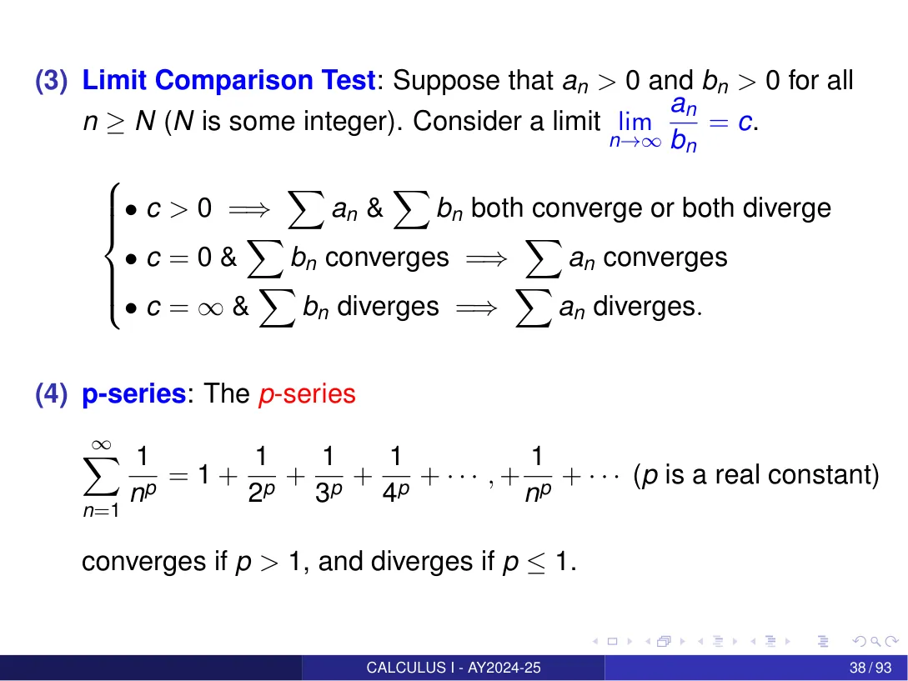
(3) Limit comparison: for $a_n,b_n>0$ with $\lim\frac{a_n}{b_n}=c$: if $c>0$ the two series converge or diverge together; if $c=0$ and $\sum b_n$ converges then $\sum a_n$ converges; if $c=\infty$ and $\sum b_n$ diverges then $\sum a_n$ diverges. (4) $p$-series: $\sum\frac1{n^p}$ converges if $p>1$ and diverges if $p\le1$ (the integral test with the $p$-integral of the last lecture). In practice: pick $b_n=\frac1{n^p}$ from the dominant terms of $a_n$.
(3) So sánh giới hạn: với $a_n,b_n>0$ và $\lim\frac{a_n}{b_n}=c$: nếu $c>0$ hai chuỗi cùng hội tụ hoặc cùng phân kỳ; nếu $c=0$ và $\sum b_n$ hội tụ thì $\sum a_n$ hội tụ; nếu $c=\infty$ và $\sum b_n$ phân kỳ thì $\sum a_n$ phân kỳ. (4) Chuỗi $p$: $\sum\frac1{n^p}$ hội tụ nếu $p>1$ và phân kỳ nếu $p\le1$ (tiêu chuẩn tích phân với tích phân $p$ của bài trước). Trong thực hành: chọn $b_n=\frac1{n^p}$ từ các số hạng trội của $a_n$.
Limit comparison with $\frac1{n^p}$ settles almost every series whose terms are rational or algebraic in $n$.
So sánh giới hạn với $\frac1{n^p}$ giải quyết hầu như mọi chuỗi mà số hạng là hữu tỉ hoặc đại số theo $n$.
Decide: $\displaystyle\sum\frac{n+1}{n^3+2}$ and $\displaystyle\sum\frac1{\sqrt{n^2+1}}$.
Xét: $\displaystyle\sum\frac{n+1}{n^3+2}$ và $\displaystyle\sum\frac1{\sqrt{n^2+1}}$.
Answer and solution · Đáp án và lời giải
Answer · Đáp án: the first converges, the second diverges
First: compare with $\frac1{n^2}$: $\frac{(n+1)/(n^3+2)}{1/n^2}=\frac{n^3+n^2}{n^3+2}\to1>0$, and $\sum\frac1{n^2}$ converges: converges. Second: compare with $\frac1n$: $\frac{n}{\sqrt{n^2+1}}\to1>0$, and the harmonic series diverges: diverges.
Bài đầu: so sánh với $\frac1{n^2}$: $\frac{(n+1)/(n^3+2)}{1/n^2}=\frac{n^3+n^2}{n^3+2}\to1>0$, và $\sum\frac1{n^2}$ hội tụ: hội tụ. Bài sau: so sánh với $\frac1n$: $\frac{n}{\sqrt{n^2+1}}\to1>0$, và chuỗi điều hòa phân kỳ: phân kỳ.
Exercise: three series · Bài tập: ba chuỗi
★★★ Core · Cốt lõi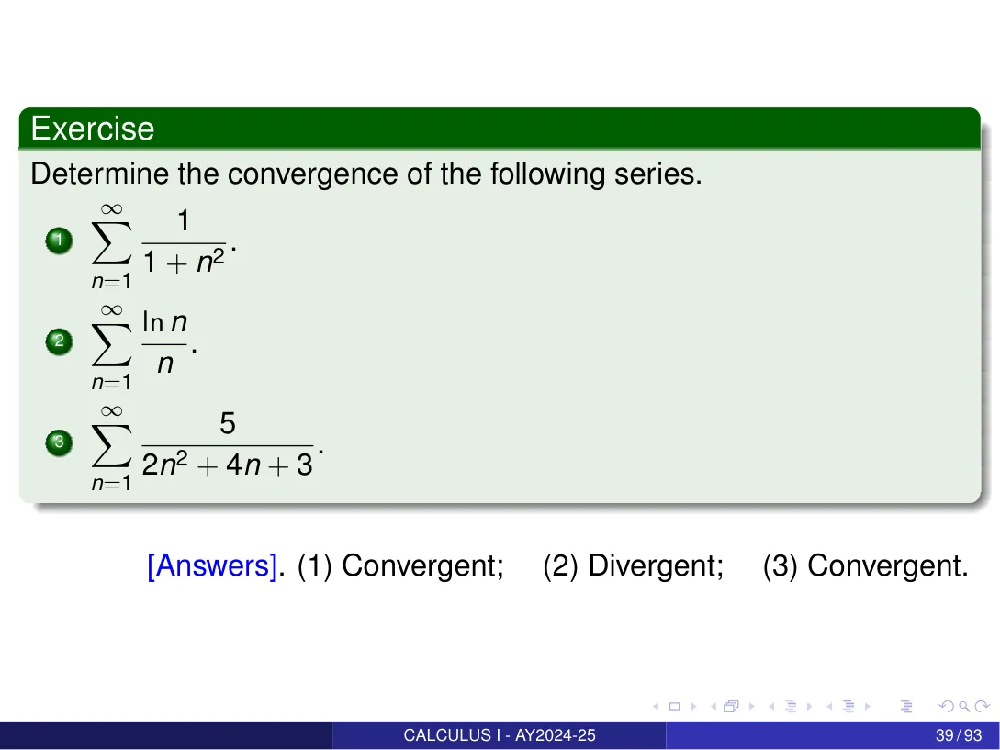
The slide's exercise: determine the convergence of (1) $\sum\frac1{1+n^2}$, (2) $\sum\frac{\ln n}n$, (3) $\sum\frac5{2n^2+4n+3}$. Answers: (1) convergent, (2) divergent, (3) convergent. Reasons: (1) $\frac1{1+n^2}<\frac1{n^2}$ (comparison with the $p=2$ series); (2) $\ln n\ge1$ for $n\ge3$, so $\frac{\ln n}n\ge\frac1n$ (comparison with the harmonic series); (3) limit comparison with $\frac1{n^2}$, limit $\frac52$.
Bài tập trên slide: xác định sự hội tụ của (1) $\sum\frac1{1+n^2}$, (2) $\sum\frac{\ln n}n$, (3) $\sum\frac5{2n^2+4n+3}$. Đáp án: (1) hội tụ, (2) phân kỳ, (3) hội tụ. Lý do: (1) $\frac1{1+n^2}<\frac1{n^2}$ (so sánh với chuỗi $p=2$); (2) $\ln n\ge1$ với $n\ge3$ nên $\frac{\ln n}n\ge\frac1n$ (so sánh với chuỗi điều hòa); (3) so sánh giới hạn với $\frac1{n^2}$, giới hạn $\frac52$.
Justify each of the three answers on the slide with a named test.
Giải thích từng đáp án trong ba đáp án trên slide bằng một tiêu chuẩn có tên.
Answer and solution · Đáp án và lời giải
Answer · Đáp án: comparison, comparison, limit comparison
(1) $0<\frac1{1+n^2}<\frac1{n^2}$ and $\sum\frac1{n^2}$ converges (comparison). (2) For $n\ge3$, $\ln n>1$, so $\frac{\ln n}n>\frac1n\ge0$ and the harmonic series diverges (comparison). (3) $\frac{5/(2n^2+4n+3)}{1/n^2}\to\frac52>0$ and $\sum\frac1{n^2}$ converges (limit comparison).
(1) $0<\frac1{1+n^2}<\frac1{n^2}$ và $\sum\frac1{n^2}$ hội tụ (so sánh). (2) Với $n\ge3$, $\ln n>1$ nên $\frac{\ln n}n>\frac1n\ge0$ và chuỗi điều hòa phân kỳ (so sánh). (3) $\frac{5/(2n^2+4n+3)}{1/n^2}\to\frac52>0$ và $\sum\frac1{n^2}$ hội tụ (so sánh giới hạn).
The ratio and root tests · Tiêu chuẩn tỉ số và tiêu chuẩn căn
★★★ Core · Cốt lõi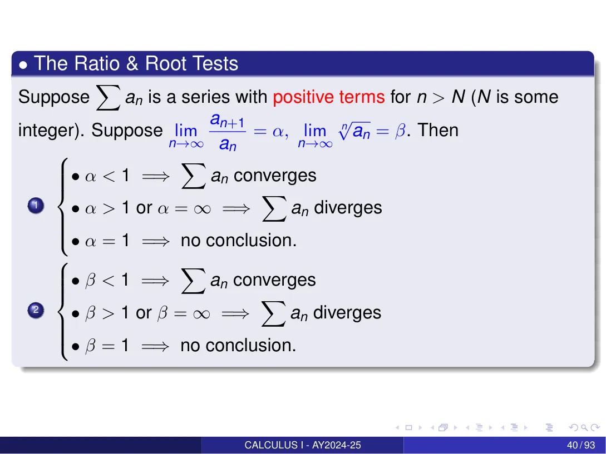
For positive terms let $\alpha=\lim\frac{a_{n+1}}{a_n}$ and $\beta=\lim\sqrt[n]{a_n}$. Ratio test: $\alpha<1$ converges; $\alpha>1$ (or $\infty$) diverges; $\alpha=1$ no conclusion. Root test: the same with $\beta$. Both compare the series with a geometric series. Use the ratio test when $a_n$ has factorials or products ($n!$, $a^n$), the root test when $a_n$ is an $n$-th power. If the limit is $1$ (as for every $p$-series) the test is silent: use another one.
Với số hạng dương đặt $\alpha=\lim\frac{a_{n+1}}{a_n}$ và $\beta=\lim\sqrt[n]{a_n}$. Tiêu chuẩn tỉ số: $\alpha<1$ hội tụ; $\alpha>1$ (hoặc $\infty$) phân kỳ; $\alpha=1$ không kết luận. Tiêu chuẩn căn: tương tự với $\beta$. Cả hai so sánh chuỗi với chuỗi hình học. Dùng tiêu chuẩn tỉ số khi $a_n$ có giai thừa hoặc tích ($n!$, $a^n$), tiêu chuẩn căn khi $a_n$ là lũy thừa bậc $n$. Nếu giới hạn bằng $1$ (như mọi chuỗi $p$) thì tiêu chuẩn im lặng: dùng tiêu chuẩn khác.
Decide with the ratio test: $\sum\frac{2^n}{n!}$, $\sum\frac{n!}{n^n}$ and $\sum\frac{n^n}{n!}$.
Xét bằng tiêu chuẩn tỉ số: $\sum\frac{2^n}{n!}$, $\sum\frac{n!}{n^n}$ và $\sum\frac{n^n}{n!}$.
Answer and solution · Đáp án và lời giải
Answer · Đáp án: converges ($\alpha=0$), converges ($\alpha=\frac1e$), diverges ($\alpha=e$)
$\frac{a_{n+1}}{a_n}=\frac2{n+1}\to0<1$. For $\frac{n!}{n^n}$: $\frac{(n+1)!}{(n+1)^{n+1}}\cdot\frac{n^n}{n!}=\left(\frac n{n+1}\right)^n=\left(1+\frac1n\right)^{-n}\to\frac1e<1$. For $\frac{n^n}{n!}$ the ratio is the reciprocal, $\left(1+\frac1n\right)^n\to e>1$: diverges.
$\frac{a_{n+1}}{a_n}=\frac2{n+1}\to0<1$. Với $\frac{n!}{n^n}$: $\frac{(n+1)!}{(n+1)^{n+1}}\cdot\frac{n^n}{n!}=\left(\frac n{n+1}\right)^n=\left(1+\frac1n\right)^{-n}\to\frac1e<1$. Với $\frac{n^n}{n!}$ tỉ số là nghịch đảo, $\left(1+\frac1n\right)^n\to e>1$: phân kỳ.
Examples of the ratio and root tests · Ví dụ về tiêu chuẩn tỉ số và căn
★★★ Core · Cốt lõi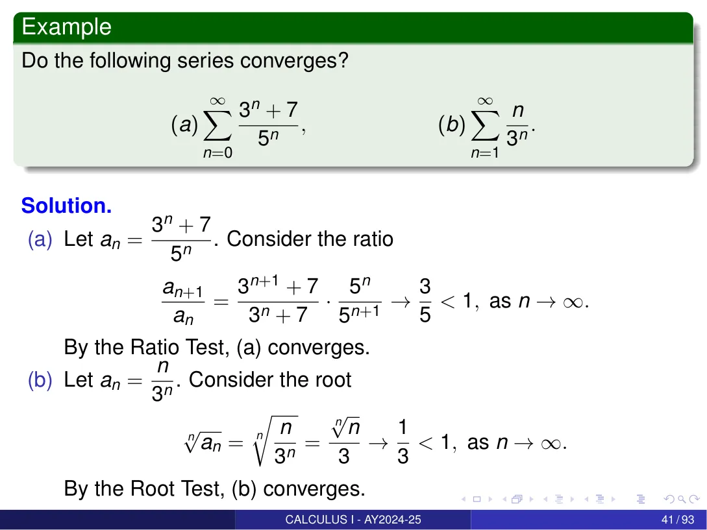
(a) $\sum\frac{3^n+7}{5^n}$: $\frac{a_{n+1}}{a_n}=\frac{3^{n+1}+7}{3^n+7}\cdot\frac{5^n}{5^{n+1}}\to3\cdot\frac15=\frac35<1$ (ratio test): converges. (b) $\sum\frac n{3^n}$: $\sqrt[n]{a_n}=\frac{\sqrt[n]n}3\to\frac13<1$ (root test; $\sqrt[n]n\to1$): converges.
(a) $\sum\frac{3^n+7}{5^n}$: $\frac{a_{n+1}}{a_n}=\frac{3^{n+1}+7}{3^n+7}\cdot\frac{5^n}{5^{n+1}}\to3\cdot\frac15=\frac35<1$ (tiêu chuẩn tỉ số): hội tụ. (b) $\sum\frac n{3^n}$: $\sqrt[n]{a_n}=\frac{\sqrt[n]n}3\to\frac13<1$ (tiêu chuẩn căn; $\sqrt[n]n\to1$): hội tụ.
Use the ratio test for $\sum\frac{n^2}{2^n}$ and the root test for $\sum\left(\frac n{2n+1}\right)^n$.
Dùng tiêu chuẩn tỉ số cho $\sum\frac{n^2}{2^n}$ và tiêu chuẩn căn cho $\sum\left(\frac n{2n+1}\right)^n$.
Answer and solution · Đáp án và lời giải
Answer · Đáp án: both converge ($\alpha=\frac12$ and $\beta=\frac12$)
$\frac{(n+1)^2/2^{n+1}}{n^2/2^n}=\frac{(n+1)^2}{2n^2}\to\frac12<1$. And $\sqrt[n]{\left(\frac n{2n+1}\right)^n}=\frac n{2n+1}\to\frac12<1$.
$\frac{(n+1)^2/2^{n+1}}{n^2/2^n}=\frac{(n+1)^2}{2n^2}\to\frac12<1$. Và $\sqrt[n]{\left(\frac n{2n+1}\right)^n}=\frac n{2n+1}\to\frac12<1$.
Absolute convergence · Hội tụ tuyệt đối
★★★ Core · Cốt lõi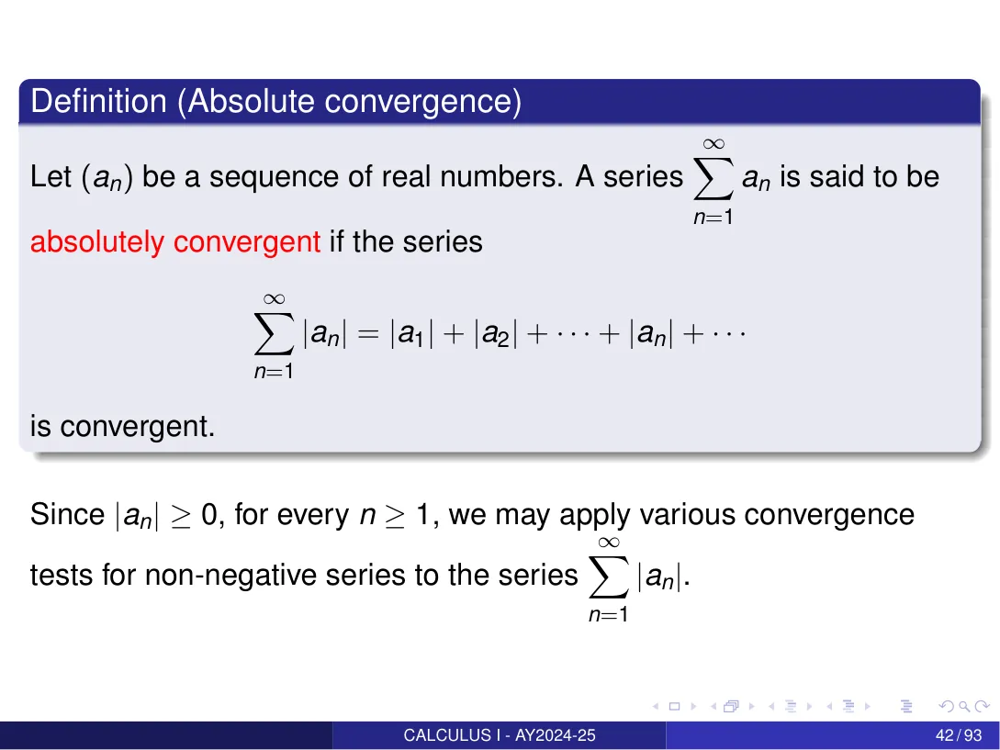
A series $\sum a_n$ (any signs) is absolutely convergent if $\sum|a_n|=|a_1|+|a_2|+\cdots$ converges. Since $|a_n|\ge0$, all the tests for non-negative series (integral, comparison, ratio, root, $p$-series) can be applied to $\sum|a_n|$. This is the way to handle series whose signs are irregular.
Chuỗi $\sum a_n$ (dấu bất kỳ) hội tụ tuyệt đối nếu $\sum|a_n|=|a_1|+|a_2|+\cdots$ hội tụ. Vì $|a_n|\ge0$, mọi tiêu chuẩn cho chuỗi không âm (tích phân, so sánh, tỉ số, căn, chuỗi $p$) đều áp dụng được cho $\sum|a_n|$. Đây là cách xử lý chuỗi có dấu không đều.
Ratio and root tests for arbitrary series · Tiêu chuẩn tỉ số và căn cho chuỗi bất kỳ
★★★ Core · Cốt lõi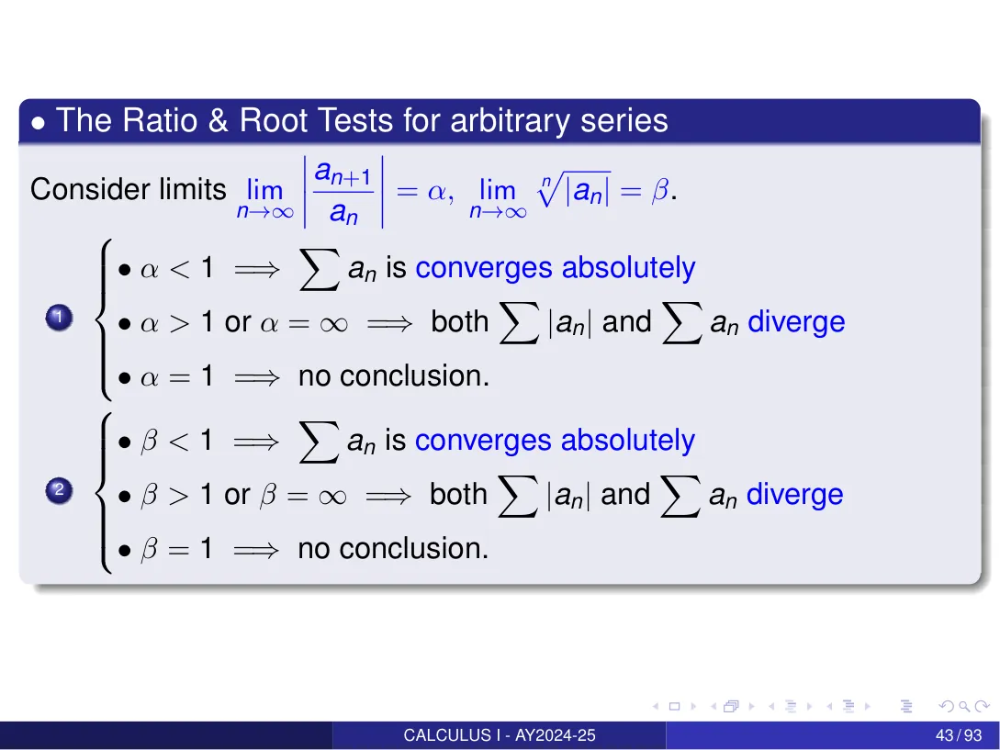
For any series let $\alpha=\lim\left|\frac{a_{n+1}}{a_n}\right|$ and $\beta=\lim\sqrt[n]{|a_n|}$. If $\alpha<1$ (or $\beta<1$) the series converges absolutely; if $\alpha>1$ or $\infty$ (or $\beta>1$) both $\sum|a_n|$ and $\sum a_n$ diverge; if it equals $1$ there is no conclusion. Note the absolute values in the limits.
Với chuỗi bất kỳ đặt $\alpha=\lim\left|\frac{a_{n+1}}{a_n}\right|$ và $\beta=\lim\sqrt[n]{|a_n|}$. Nếu $\alpha<1$ (hoặc $\beta<1$) chuỗi hội tụ tuyệt đối; nếu $\alpha>1$ hoặc $\infty$ (hoặc $\beta>1$) thì cả $\sum|a_n|$ và $\sum a_n$ phân kỳ; nếu bằng $1$ thì không kết luận. Chú ý các dấu giá trị tuyệt đối trong giới hạn.
Example: $\sum(-1)^n\frac n{3^n}$ · Ví dụ: $\sum(-1)^n\frac n{3^n}$
★★★ Core · Cốt lõi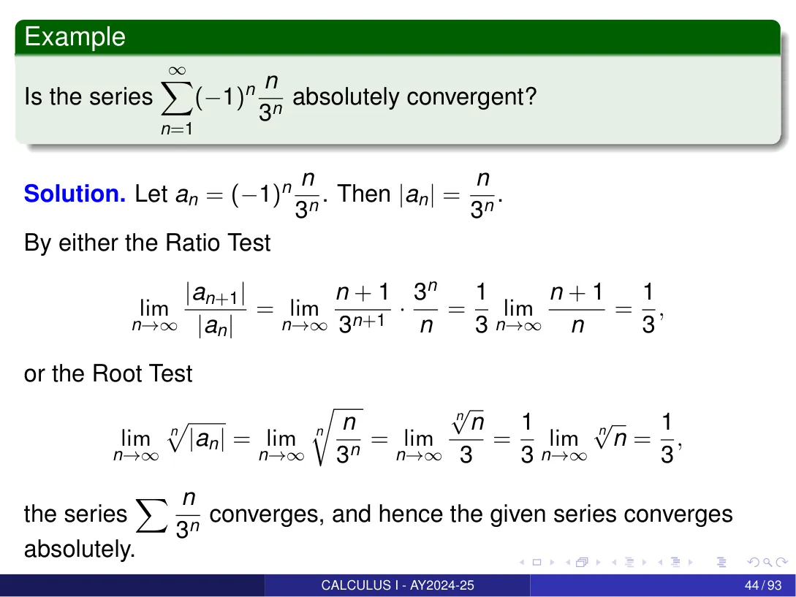
Is $\sum(-1)^n\frac n{3^n}$ absolutely convergent? Here $|a_n|=\frac n{3^n}$. By the ratio test $\lim\frac{|a_{n+1}|}{|a_n|}=\lim\frac{n+1}{3^{n+1}}\cdot\frac{3^n}n=\frac13\lim\frac{n+1}n=\frac13$; by the root test $\lim\sqrt[n]{|a_n|}=\frac13\lim\sqrt[n]n=\frac13$. Either way the limit is $<1$, so the series converges absolutely.
$\sum(-1)^n\frac n{3^n}$ có hội tụ tuyệt đối không? Ở đây $|a_n|=\frac n{3^n}$. Theo tiêu chuẩn tỉ số $\lim\frac{|a_{n+1}|}{|a_n|}=\lim\frac{n+1}{3^{n+1}}\cdot\frac{3^n}n=\frac13\lim\frac{n+1}n=\frac13$; theo tiêu chuẩn căn $\lim\sqrt[n]{|a_n|}=\frac13\lim\sqrt[n]n=\frac13$. Cả hai cách giới hạn đều $<1$ nên chuỗi hội tụ tuyệt đối.
Show that $\displaystyle\sum_{n=0}^\infty\frac{(-2)^n}{n!}$ converges absolutely and find its sum.
Chứng tỏ $\displaystyle\sum_{n=0}^\infty\frac{(-2)^n}{n!}$ hội tụ tuyệt đối và tìm tổng.
Answer and solution · Đáp án và lời giải
Answer · Đáp án: absolutely convergent; sum $e^{-2}$
$\left|\frac{a_{n+1}}{a_n}\right|=\frac{2^{n+1}}{(n+1)!}\cdot\frac{n!}{2^n}=\frac2{n+1}\to0<1$: absolutely convergent. Its sum is $e^{-2}\approx0.135$ (the exponential series $\sum\frac{x^n}{n!}=e^x$ at $x=-2$, met in the next lecture).
$\left|\frac{a_{n+1}}{a_n}\right|=\frac{2^{n+1}}{(n+1)!}\cdot\frac{n!}{2^n}=\frac2{n+1}\to0<1$: hội tụ tuyệt đối. Tổng là $e^{-2}\approx0.135$ (chuỗi hàm mũ $\sum\frac{x^n}{n!}=e^x$ tại $x=-2$, sẽ gặp ở bài sau).
Absolute convergence implies convergence; conditional convergence · Hội tụ tuyệt đối kéo theo hội tụ; hội tụ có điều kiện
★★★ Core · Cốt lõi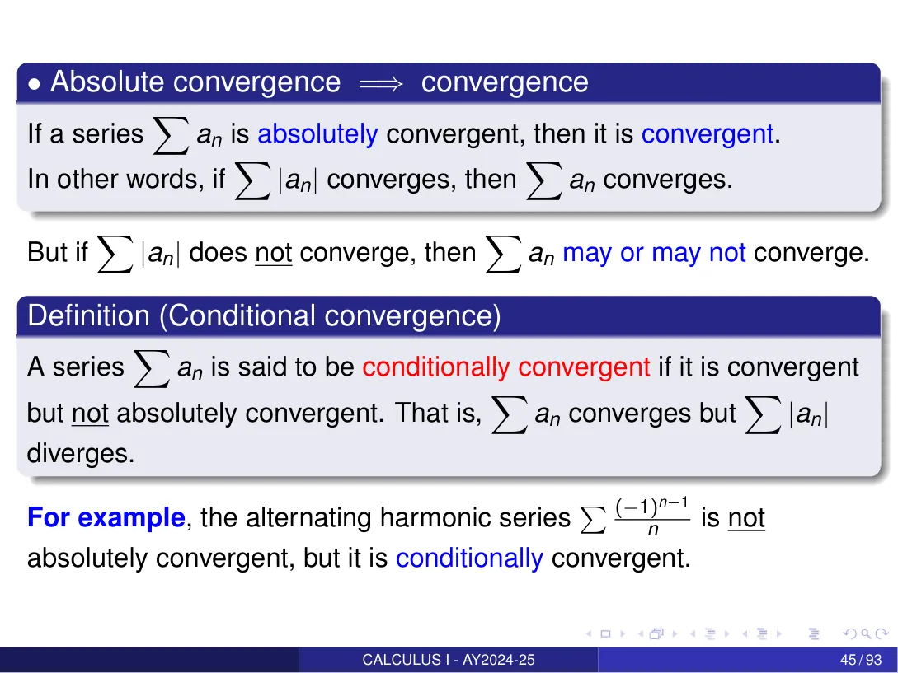
If $\sum|a_n|$ converges then $\sum a_n$ converges. The reverse is false: if $\sum|a_n|$ diverges, $\sum a_n$ may or may not converge. A series is conditionally convergent if it converges but not absolutely. Example: the alternating harmonic series $\sum\frac{(-1)^{n-1}}n$ converges (alternating test) but $\sum\frac1n$ diverges, so the convergence is only conditional: it depends on the cancellation between positive and negative terms.
Nếu $\sum|a_n|$ hội tụ thì $\sum a_n$ hội tụ. Chiều ngược lại sai: nếu $\sum|a_n|$ phân kỳ thì $\sum a_n$ có thể hội tụ hoặc không. Chuỗi hội tụ có điều kiện nếu nó hội tụ nhưng không hội tụ tuyệt đối. Ví dụ: chuỗi điều hòa đan dấu $\sum\frac{(-1)^{n-1}}n$ hội tụ (tiêu chuẩn đan dấu) nhưng $\sum\frac1n$ phân kỳ, nên sự hội tụ chỉ có điều kiện: nó phụ thuộc vào sự triệt tiêu giữa số hạng dương và âm.
Classify $\sum\frac{(-1)^{n-1}}n$ and $\sum\frac{(-1)^{n-1}}{n^2}$ as absolutely or conditionally convergent.
Phân loại $\sum\frac{(-1)^{n-1}}n$ và $\sum\frac{(-1)^{n-1}}{n^2}$ là hội tụ tuyệt đối hay có điều kiện.
Answer and solution · Đáp án và lời giải
Answer · Đáp án: the first conditionally, the second absolutely
Both converge by the alternating test. Absolute values: $\sum\frac1n$ diverges ($p=1$) so the first is conditional; $\sum\frac1{n^2}$ converges ($p=2$) so the second is absolute.
Cả hai hội tụ theo tiêu chuẩn đan dấu. Giá trị tuyệt đối: $\sum\frac1n$ phân kỳ ($p=1$) nên chuỗi đầu có điều kiện; $\sum\frac1{n^2}$ hội tụ ($p=2$) nên chuỗi sau tuyệt đối.
The alternating $p$-series · Chuỗi $p$ đan dấu
★★★ Core · Cốt lõi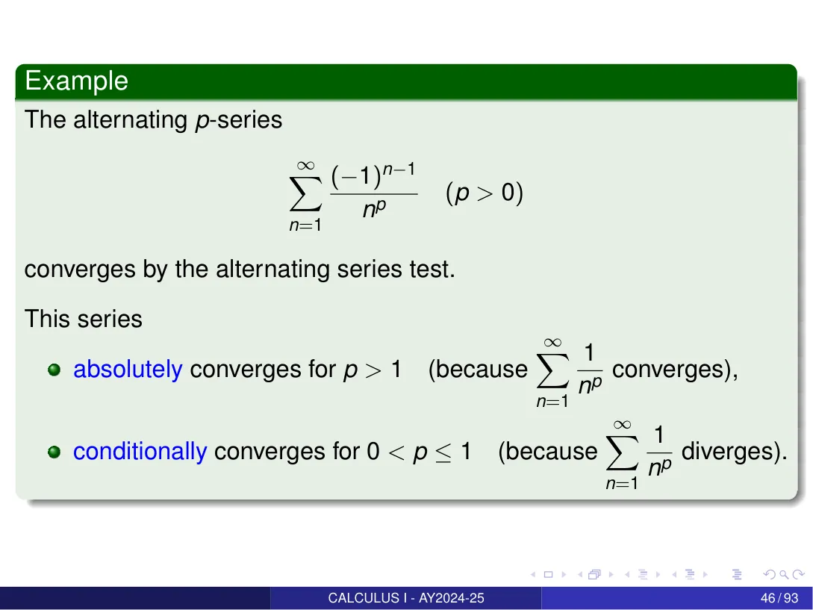
For $p>0$, $\sum\frac{(-1)^{n-1}}{n^p}$ converges by the alternating series test ($\frac1{n^p}\downarrow0$). It converges absolutely for $p>1$ (since $\sum\frac1{n^p}$ converges) and conditionally for $0<p\le1$ (since $\sum\frac1{n^p}$ diverges). For $p\le0$ the terms do not tend to $0$ and the series diverges.
Với $p>0$, $\sum\frac{(-1)^{n-1}}{n^p}$ hội tụ theo tiêu chuẩn đan dấu ($\frac1{n^p}\downarrow0$). Nó hội tụ tuyệt đối khi $p>1$ (vì $\sum\frac1{n^p}$ hội tụ) và có điều kiện khi $0<p\le1$ (vì $\sum\frac1{n^p}$ phân kỳ). Với $p\le0$ các số hạng không tiến về $0$ và chuỗi phân kỳ.
Classify $\sum\frac{(-1)^{n-1}}{\sqrt n}$, $\sum\frac{(-1)^{n-1}}{n^{3/2}}$ and $\sum(-1)^{n-1}\frac n{n+1}$.
Phân loại $\sum\frac{(-1)^{n-1}}{\sqrt n}$, $\sum\frac{(-1)^{n-1}}{n^{3/2}}$ và $\sum(-1)^{n-1}\frac n{n+1}$.
Answer and solution · Đáp án và lời giải
Answer · Đáp án: conditionally convergent, absolutely convergent, divergent
$p=\frac12\in(0,1]$: conditional. $p=\frac32>1$: absolute. The third has $\frac n{n+1}\to1\ne0$, so by the test for divergence it diverges.
$p=\frac12\in(0,1]$: có điều kiện. $p=\frac32>1$: tuyệt đối. Chuỗi thứ ba có $\frac n{n+1}\to1\ne0$ nên theo tiêu chuẩn phân kỳ nó phân kỳ.
Summary: absolute or conditional convergence · Tóm tắt: hội tụ tuyệt đối hay có điều kiện
★★★ Core · Cốt lõi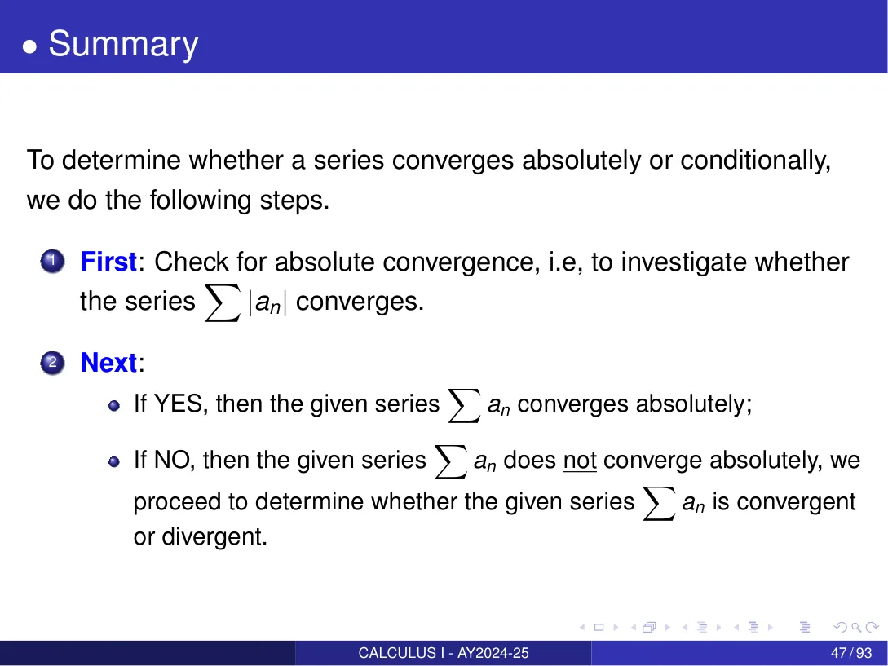
To decide absolute or conditional convergence: Step 1: check absolute convergence, i.e. whether $\sum|a_n|$ converges. Step 2: if yes, $\sum a_n$ converges absolutely and you are done. If not, $\sum a_n$ is not absolutely convergent and you must still decide whether it converges (for instance by the alternating series test); if it does, it is conditionally convergent; if not, it diverges.
Để xác định hội tụ tuyệt đối hay có điều kiện: Bước 1: kiểm tra hội tụ tuyệt đối, tức $\sum|a_n|$ có hội tụ không. Bước 2: nếu có, $\sum a_n$ hội tụ tuyệt đối và xong. Nếu không, $\sum a_n$ không hội tụ tuyệt đối và bạn vẫn phải xác định nó có hội tụ không (ví dụ bằng tiêu chuẩn đan dấu); nếu có, nó hội tụ có điều kiện; nếu không, nó phân kỳ.
This two-step procedure is the standard exam answer for any series with mixed signs.
Quy trình hai bước này là câu trả lời thi chuẩn cho mọi chuỗi có dấu hỗn hợp.
Classify $\displaystyle\sum_{n=1}^\infty\frac{(-1)^{n-1}}{\sqrt n+1}$.
Phân loại $\displaystyle\sum_{n=1}^\infty\frac{(-1)^{n-1}}{\sqrt n+1}$.
Answer and solution · Đáp án và lời giải
Answer · Đáp án: conditionally convergent
Step 1: $\sum\frac1{\sqrt n+1}$ vs $\sum\frac1{\sqrt n}$: ratio $\frac{\sqrt n}{\sqrt n+1}\to1>0$, and $\sum n^{-1/2}$ diverges ($p=\frac12$), so it diverges: not absolutely convergent. Step 2: $b_n=\frac1{\sqrt n+1}$ decreases to $0$, so the alternating test gives convergence. Hence conditionally convergent.
Bước 1: $\sum\frac1{\sqrt n+1}$ so với $\sum\frac1{\sqrt n}$: tỉ số $\frac{\sqrt n}{\sqrt n+1}\to1>0$, và $\sum n^{-1/2}$ phân kỳ ($p=\frac12$), nên nó phân kỳ: không hội tụ tuyệt đối. Bước 2: $b_n=\frac1{\sqrt n+1}$ giảm về $0$ nên tiêu chuẩn đan dấu cho hội tụ. Vậy hội tụ có điều kiện.